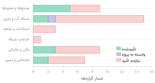
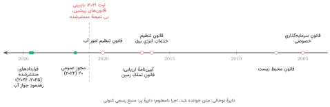
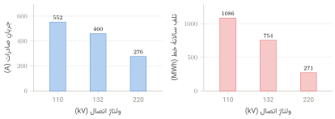
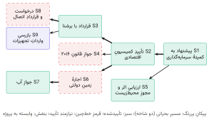
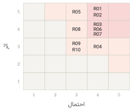
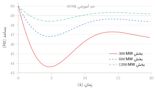

56 پروندهٔ مقررات و استانداردهای افغانستان
56.1 نقشهٔ فصل
این فصل حاصلِ پژوهش بر منابعِ رسمی و ثانوی در تاریخِ 2026-11-17 است. در افغانستان قانونهای پیش از اوتِ ۲۰۲۱ از سوی مقامهای بالفعلِ کنونی در دستِ بازبینیاند و نتیجهٔ آن بازبینی، اینکه کدام قانون جاری است، منتشر نشده است. پس متنِ بسیاری از سندها خواندنی است، ولی اجرای کنونیشان نامعلوم است. هیچ گزارهای از این فصل بی بازبینیِ مهندسان و کارشناسانِ حقوقی و مقرراتیِ آشنا با رویهٔ جاریِ افغانستان و بی وارسیِ دوباره در منبع برای پروژه به کار نمیرود. این فصل مشاورهٔ حقوقی، مالیاتی، مالی یا تحریمی نیست.
پس از این فصل، خواننده میتواند:
- مرجعها، شرکتِ برق و راهِ تأییدِ یک طرحِ تولیدِ خصوصی را در افغانستان از منبع نام ببرد و نقشِ هر کدام را با وضعیتش بگوید.
- میانِ «متنِ خواندهشده» و «اجرای تأییدشده» فرق بگذارد و هر سندِ پیش از ۲۰۲۱ را با همین دو برچسب ثبت کند.
- دادههایی را که مطالعههای شبکه میخواهند فهرست کند، بهویژه اینکه نیروگاه به کدام جزیرهٔ شبکه وصل میشود.
- گزینههای تجهیز را در برابرِ توانِ خدماتِ محلی بسنجد، بی آنکه نامعلوم را قبولشده بشمارد.
- منابعِ مالی، تحریم، زمین و جامعه را فقط با شاهدِ معتبر وارد پرونده کند و هر نامعلوم را برچسب بزند.
پیشنیاز: روشِ شناساییِ الزامها (فصل 54) و پروندهٔ ایران (فصل 55)، که موتورِ برنامه و قالبِ این فصل را ساخت.
- اگر متنِ قانونِ ۲۰۱۶ را خوانده باشید ولی ندانید امروز اجرا میشود یا نه، گزاره چه برچسبی میگیرد؟
- چرا پرسشِ «نیروگاه به کدام بخشِ شبکه وصل میشود» پیش از هر مطالعه میآید؟
- اگر نمیدانید تکنسینِ توربین در کشور هست یا نه، آیا این قیدِ تعمیرپذیری برآورده شده است؟
پاسخها: (۱) نیازمندِ تأیید، با یادداشتِ «متن خوانده شد، اجرا نامعلوم»؛ (۲) چون شبکهٔ کشور یکپارچه نیست و اندازه و رفتارِ هر بخش فرق دارد؛ (۳) نه، نامعلوم هرگز قبولشده نیست. اگر دو پرسش یا بیشتر را نتوانستید، بخش 54.4.2 و بخش 55.1.1 را مرور کنید.
جایگاهِ این فصل در نیروگاهِ P. فرض این است که نیروگاهِ P در افغانستان ساخته شود (P–افغانستان). دادههای فنی همان دادههای کتاباند. مرجعها، سندها و قراردادهای منتشرشده از پژوهشِ 2026-11-17 میآیند و یادداشتِ کاملِ پژوهش در پوشهٔ پژوهشِ پروژه ثبت است. مدتها، گواهیِ نمونه، گزینههای تجهیز و امتیازهای ریسک آموزشیاند (A-557 تا A-561). نتیجه مبنای D-060 است.
56.1.1 برچسبها در این پرونده
همان سه برچسبِ جدول 55.1 به کار میرود، با یک قاعدهٔ افزوده: سندِ پیش از ۲۰۲۱ که متنش خوانده شد، تا وقتی اجرای کنونیاش از منبعِ معتبر تأیید نشده، نیازمندِ تأیید است. صفحههای رسمیِ مقامهای کنونی (وزارتِ آب و انرژی، دفترِ معاونِ اقتصادیِ رئیسالوزرا، ادارهٔ ملیِ حفاظتِ محیطِ زیست، مرجعِ ملیِ استاندارد) وقتی خوانده شدهاند، تأییدشدهاند. شناسهها AF-01 تا AF-44 است.
برنامه:
companion/ch56/run.py و companion/ch56/more.py
Afghanistan: 44 facts by topic and status (sources read 2026-11-17)
topic verified proj-dep to-confirm
A authorities and approvals 5 0 4
B grid, export, water, land 2 1 12
C standards and evidence 0 0 3
E grid services 0 0 1
F finance and fiscal 3 0 6
G social and land 2 0 5
all 12 1 31
of the to-confirm items, 16 rest only on secondary sources
(news, lenders' or law firms' summaries): a lead, not a source
مثال 56.1 (پروندهای با بیشترِ گزارهها نیازمندِ تأیید) پرسش. از ۴۴ گزاره چند تا تأییدشدهاند و چرا نسبت از پروندهٔ ایران کمتر است؟
پاسخ. ۱۲ تأییدشده، ۱ وابسته به پروژه و ۳۱ نیازمندِ تأیید. ۱۶ گزارهٔ نیازمندِ تأیید فقط منبعِ ثانوی دارند. «شبکه، آب و زمین» ۱۲ گزارهٔ نیازمندِ تأیید دارد (شکل 56.1).
تفسیر. دو دلیل. یک: بیشترِ چارچوبِ حقوقیِ مکتوب پیش از ۲۰۲۱ است و اجرایش نامعلوم. دو: بسیاری از دادههای شبکه و توانِ محلی فقط در گزارشهای بینالمللی و خبرها آمدهاند. آنچه تأییدشده است بیشتر از صفحههای رسمیِ کنونی میآید: قراردادهای منتشرشده، راهِ تأییدِ طرح، رهنمودِ جوازِ آب و صفحههای مجوزِ محیطزیستی. این پرونده بیش از پروندهٔ ایران به نامه و بازبینِ محلی تکیه دارد.
56.1.2 سابقهٔ جستوجو
research log: official and de facto authority sites, 2026-11-17
mew.gov.af read (posts to 17 Nov 2026)
dpmea.gov.af read
nepa.gov.af read (document links script-only)
asqa.gov.af read
main.dabs.af script-only, not read
mudh.gov.af read (last item 2025)
ansa.gov.af does not resolve
mudl.gov.af does not resolve
nwara.gov.af does not resolve
aop.gov.af certificate error
read 5, not read 5 of 10
pre-2021 laws were read as gazette PDFs or the ministry's
English translation; whether each is applied is a separate
question (the review of earlier laws has no published result)مثال 56.2 (نیمی از وبگاهها خوانده شد) پرسش. از ده وبگاهِ آزموده چند تا خوانده شد؟
پاسخ. پنج: وزارتِ آب و انرژی، دفترِ معاونِ اقتصادی، ادارهٔ ملیِ حفاظتِ محیطِ زیست، مرجعِ استاندارد و وزارتِ شهرسازی. وبگاهِ شرکتِ برشنا فقط با اسکریپت باز شد و محتوایش خوانده نشد. سه نشانیِ قدیمی دیگر باز نمیشوند و یکی خطای گواهی داد.
تفسیر. نشانیِ قدیمیای که باز نمیشود خودش نشانهٔ تغییرِ نهادهاست: مرجعِ استاندارد نام عوض کرده و نهادِ آب در وزارتخانه ادغام شده است. در پرونده، هر نهاد با نام و نشانیِ کنونیاش ثبت میشود و نامِ قدیمی در یادداشت میماند تا سندهای قدیمیتر قابلِ پیگیری باشند.
56.2 الف. مرجعها و راهِ تأیید
این بخش نهادهای مرتبط با یک نیروگاهِ بادی–خورشیدیِ خصوصی را با منبع و وضعیت میآورد و راهِ تأییدی را که صفحههای رسمیِ کنونی نشان میدهند. از قانونِ برقِ ۲۰۱۶ هم یاد میشود، با برچسبی که اجرای نامعلومش را نشان دهد.
56.2.1 نهادها
| شناسه | گزاره | وضعیت | منبع |
|---|---|---|---|
| AF-01 | وبگاهِ وزارتخانه فعال است و خود را «وزارتِ آب و انرژی» مینامد (صفحههای قدیمیتر «انرژی و آب») | تأییدشده | mew.gov.af، مطلبها تا 2026-11-17 |
| AF-02 | «د افغانستان برشنا شرکت» شرکتِ برق است و قراردادهای تولیدِ خصوصی را امضا میکند | تأییدشده | صفحههای دفترِ معاونِ اقتصادیِ رئیسالوزرا (2025، 2026) |
| AF-07 | ادارهٔ ملیِ حفاظتِ محیطِ زیست فعال است و مجوزِ محیطزیستی صادر میکند | تأییدشده | nepa.gov.af |
| AF-08 | مرجعِ ملیِ استاندارد در نوامبرِ ۲۰۲۵ به ASQA تغییرِ نام داد؛ وبگاه asqa.gov.af | تأییدشده | وبگاهِ مرجع؛ تغییرِ نام از صفحهٔ عضویت در ISO |
| AF-09 | کدام نهاد زمینِ دولتی را برای طرحِ انرژی اجاره میدهد | نیازمندِ تأیید (ثانوی) | وزارتِ شهرسازی؛ نشانیهای قدیمی باز نمیشوند |
56.2.2 راهِ تأییدِ طرحِ خصوصی
| شناسه | گزاره | وضعیت | منبع |
|---|---|---|---|
| AF-03 | کمیتهٔ بینوزارتیِ سرمایهگذاری پیشنهاد را بررسی و برای تأییدِ نهایی به کمیسیونِ اقتصادی میفرستد؛ سپس شرکتِ برشنا قرارداد میبندد | تأییدشده | صفحههای دفترِ معاونِ اقتصادی (2023-12-05، 2026-03-03) |
| AF-04 | روش، معیار و زمانِ مکتوبی برای این راه منتشر نشده است | نیازمندِ تأیید | همان صفحهها |
| AF-05 | قانونِ ۲۰۱۶ تنظیمگر را ادارهٔ درونِ وزارتخانه قرار میدهد؛ تنظیمگرِ فعالی پیدا نشد | نیازمندِ تأیید | «قانونِ تنظیمِ خدماتِ انرژیِ برق»، جریدهٔ رسمیِ ۱۲۳۱ (۲۰۱۶)، مواد ۵ و ۷؛ متن خوانده شد، اجرا نامعلوم |
| AF-06 | همان قانون: جواز و قرارداد با وزارتخانه برای تولید؛ جوازِ تولید حداکثر ۲۵ سال | نیازمندِ تأیید | همان، مواد ۸ تا ۱۱؛ متن خوانده شد، اجرا نامعلوم |
مثال 56.3 (راهی که در عمل دیده میشود، قانونی که شاید اجرا شود) پرسش. طرحِ نیروگاهِ P–افغانستان امروز از چه راهی تأیید میگیرد؟
پاسخ. صفحههای رسمیِ کنونی این راه را نشان میدهند: پیشنهاد به کمیتهٔ بینوزارتیِ سرمایهگذاری، تأییدِ کمیسیونِ اقتصادی و قرارداد با شرکتِ برشنا (AF-03). قانونِ ۲۰۱۶ راهِ دیگری مینویسد: جواز و قرارداد با وزارتخانه، با ضمانتِ مالی (AF-06). اینکه آن قانون امروز اجرا میشود یا نه نامعلوم است.
تفسیر. پرونده هر دو را نگه میدارد: راهِ دیدهشده به عنوانِ تأییدشده، و الزامهای قانونِ ۲۰۱۶ به عنوانِ نیازمندِ تأیید، با پرسشی کتبی به وزارتخانه (IN-01 در بخش 56.5.11). طراحی چنان پیش میرود که اگر جواز و ضمانت لازم شد، فقط یک گام به برنامه افزوده شود. هیچکدام از راهها نوشتهٔ روش و زمان ندارد (AF-04). پس مدتهای برنامه آموزشیاند.
56.2.3 قراردادهای منتشرشده
| شناسه | گزاره | وضعیت | منبع |
|---|---|---|---|
| AF-32 | ۲۷ مارسِ ۲۰۲۵: قراردادهای برشنا با بخشِ خصوصی برای ۷ طرحِ تولید، روی هم ۲۲۸٫۴۵ مگاوات (خورشیدیِ بلخ ۴۰، هرات ۵، لغمان ۱۰، لوگر ۴۰، ننگرهار ۴۰٫۲۵؛ بادیِ هرات ۴۳٫۲، فازِ نخستِ ۲۰۰؛ گازیِ جوزجان ۵۰) و ۳ طرحِ انتقال؛ ۲۰٫۷ میلیارد افغانی | تأییدشده | صفحهٔ دفترِ معاونِ اقتصادی (بازخوانیشده) |
| AF-33 | ۱۱ فوریهٔ ۲۰۲۶: قراردادهای ۸۴۵ مگاوات، خورشیدی و زغالسنگی | تأییدشده | همان، صفحهٔ دیگر |
مثال 56.4 (مگاوات منتشر شده، قیمت نه) پرسش. قراردادهای منتشرشده برای P–افغانستان چه چیزی را ثابت میکنند و چه چیزی را نه؟
پاسخ. ثابت میکنند که شرکتِ برشنا با طرفهای خصوصی قراردادِ خرید میبندد، از جمله برای یک طرحِ بادی در هرات. قیمت، مدت، ارز، شاخصگذاری و ضمانتِ پرداخت در هیچکدام منتشر نشده است (AF-29).
تفسیر. وجودِ طرفحساب تأییدشده است و شرطهای قرارداد نه. این همان جداییای است که فصلِ ۵۴ میانِ «راهِ درآمد» و «عددِ درآمد» گذاشت (بخش 54.6). مدلِ مالیِ P–افغانستان بی آن شرطها حالتِ مبنا ندارد.
56.2.4 خطِ زمانِ سندها

مثال 56.5 (دو دسته سند در دو سوی یک خط) پرسش. از شکل 56.2 دربارهٔ سندهای پرونده چه برمیآید؟
پاسخ. همهٔ قانونها و آییننامههای مکتوبِ این پرونده (سرمایهگذاری، محیطِ زیست، برق، ارزیابی، تملکِ زمین، آب) پیش از اوتِ ۲۰۲۱اند و اجرای کنونیشان نامعلوم است. منبعهای تأییدشدهٔ پس از آن صفحههای رسمیاند: قراردادهای منتشرشده، رهنمودِ جوازِ آب و صفحههای مجوزِ محیطزیستی. مجوزِ عمومیِ ۲۰ آمریکا هم پس از آن است.
تفسیر. قاعدههای تازه در قالبِ «قانون» منتشر نشدهاند، بلکه در قالبِ رهنمود، صفحهٔ مجوز و خبرِ رسمی از تصمیمها. پایشِ منبعها (بخش 56.10.1) همین صفحهها را ماهانه دنبال میکند، بهویژه برای نتیجهٔ بازبینیِ قانونهای پیشین.
- نامِ کنونیِ وزارتخانه در وبگاهش چیست؟
- راهِ تأییدِ طرحِ خصوصی را که صفحههای رسمی نشان میدهند بنویسید.
- چرا الزامهای قانونِ ۲۰۱۶ نیازمندِ تأییدند با آنکه متنشان خوانده شده است؟
- قراردادهای ۲۷ مارسِ ۲۰۲۵ چند مگاوات و چه طرحهایی بودند؟
- کدام شرطهای قرارداد منتشر نشدهاند؟
56.3 ب. شبکه، خروجی، آب، زمین و توانِ محلی
این بخش دربارهٔ شبکه، تأسیساتِ خروجی، آب، زمین و توانِ خدماتِ محلی آنچه را منبع دارد از آنچه ندارد جدا میکند. در افغانستان یک پرسش پیش از همه میآید: نیروگاه به کدام بخشِ شبکه وصل میشود.
56.3.1 ساختارِ شبکه و اتصال
| شناسه | گزاره | وضعیت | منبع |
|---|---|---|---|
| AF-10 | شبکهٔ سراسریِ یکپارچه نیست؛ بخشهای جدا با برقِ وارداتی تغذیه میشوند | نیازمندِ تأیید (ثانوی) | گزارشِ OSCE، ۲۰۲۴ |
| AF-11 | ۲۲۰ و ۱۱۰ کیلوولت در کارند (مناقصهٔ خطِ ۲۲۰ کیلوولتِ تالقان–کشم؛ خطِ ۱۱۰ کیلوولتِ میمنه–اندخوی) | تأییدشده | صفحهٔ مناقصهٔ وزارتخانه؛ دفترِ معاونِ اقتصادی، 2026-11-14 |
| AF-12 | هیچ منبعی ۱۳۲ کیلوولت را نام نمیبرد | نیازمندِ تأیید | جستوجو |
| AF-13 | قانونِ ۲۰۱۶: پاسخ به درخواستِ اتصال در ۴۰ روزِ کاری | نیازمندِ تأیید | همان قانون، مواد ۳۲ تا ۳۴؛ اجرا نامعلوم |
| AF-14 | ضوابطِ شبکه، اتصالِ تولیدِ متغیر، کنتور و دورسنجی پیدا نشد | نیازمندِ تأیید | جستوجوی وبگاههای وزارتخانه، برشنا و دفترِ معاونِ اقتصادی |
| AF-15 | تولیدِ داخلی حدودِ ۲۵۰ و واردات حدودِ ۸۰۰ مگاوات (اوتِ ۲۰۲۵) | نیازمندِ تأیید (ثانوی) | خبر به نقل از برشنا |
| AF-16 | بیشترِ منبعِ باد در هرات، فراه و نیمروز؛ فراه بی اتصال به شبکه | نیازمندِ تأیید (ثانوی) | بانکِ جهانی، ۲۰۱۸ |
which grid island would Plant P join? (AF-10, secondary)
north-east system (NEPS)
fed by: imports from Uzbekistan and Tajikistan
question: frequency set by the exporting system or by the island itself?
Herat zone
fed by: imports from Iran and Turkmenistan
question: the wind resource is here (AF-16); isolated from NEPS
south (Kandahar)
fed by: described as unconnected to the central grid
question: small system: a 100 MW plant could be most of its load
the island decides the fault level, the frequency behaviour
and how much variable output it can absorb - it is the first
question of the grid-data request, before any studyمثال 56.6 (جزیرهای که نیروگاه به آن میپیوندد) پرسش. چرا «کدام بخشِ شبکه» نخستین پرسشِ اتصالِ P–افغانستان است؟
پاسخ. چون منبعها، هرچند ثانوی، از چند بخشِ جدا خبر میدهند: شمال–شرق با برقِ وارداتی از ازبکستان و تاجیکستان، منطقهٔ هرات با واردات از ایران و ترکمنستان، و جنوب که به شبکهٔ مرکزی وصل نیست (AF-10). منبعِ باد در هرات است (AF-16).
تفسیر. سطحِ اتصالِ کوتاه، رفتارِ بسامد و اینکه چه مقدار تولیدِ متغیر پذیرفتنی است، همه از بخشی میآیند که نیروگاه به آن وصل میشود. در بخشی کوچک، نیروگاهِ ۱۰۰ مگاواتی ممکن است بخشِ بزرگی از بار باشد و پرسشهایی بسازد که در شبکهٔ بزرگ پیش نمیآیند: پایداریِ بسامد، ذخیره و حتی شکلدهی به شبکه (بخش 56.6). این نخستین پرسشِ نامهٔ درخواستِ داده به شرکتِ برشناست.
the two voltages in use against the book's 132 kV (100 MW, pf 0.95;
the ch 18 conductor kept for a like-for-like loss comparison)
kV current A line loss MWh/yr status
110 552 1086 in use (AF-11)
132 460 754 no source (AF-12)
220 276 271 in use (AF-11)
a 100 MW plant at 110 kV carries 1.2 times the 132 kV current;
at 220 kV 0.6 times - the design follows the level DABS names
for the substation the plant joinsمثال 56.7 (دو ولتاژِ در کار، ۱۳۲ بیمنبع) پرسش. جریانِ صادراتِ 100 MW در ۱۱۰ و ۲۲۰ کیلوولت چیست؟
پاسخ. 552 A در ۱۱۰ و 276 A در ۲۲۰ کیلوولت، یعنی ۱٫۲ و ۰٫۶ برابرِ جریان در ۱۳۲ کیلوولت (شکل 56.3). با رسانای فصلِ ۱۸، تلفِ سالانهٔ خط در ۱۱۰ کیلوولت 1,086 MWh است.
تفسیر. برخلافِ ایران، هر دو ولتاژِ در کار از صفحههای رسمی تأییدشدهاند (AF-11). ولتاژِ P–افغانستان یکی از این دوست، بسته به پستی که شرکتِ برشنا نام میبرد، و ۱۳۲ کیلوولت فقط فرضِ آموزشیِ کتاب است (A-561). قانونِ ۲۰۱۶ «توزیع» را تا ۱۱۰ کیلوولت تعریف میکند. اگر آن قانون اجرا شود، اتصال در ۱۱۰ کیلوولت ممکن است زیرِ قاعدههای توزیع برود.

connection line for 100 MW: voltage change and loss by length
(teaching conductor 0.10 + j0.40 ohm/km for both levels)
kV km dV % pf 1 dV % pf 0.95 loss %
110 20 1.7 3.8 1.8
110 50 4.1 9.6 4.6
110 100 8.3 19.1 9.2
110 150 12.4 28.7 13.7
220 20 0.4 1.0 0.5
220 50 1.0 2.4 1.1
220 100 2.1 4.8 2.3
220 150 3.1 7.2 3.4
5 % change at pf 0.95 is reached at 26 km (110 kV) and 105 km (220 kV)
a site far from the grid (AF-16: Farah has none) brings the
line, its owner and its losses into the connection agreementمثال 56.8 (ساختگاهِ دور از شبکه) پرسش. اگر ساختگاه ۵۰ کیلومتر از پستِ شبکه فاصله داشته باشد، خطِ اتصالِ ۱۱۰ و ۲۲۰ کیلوولتی برای 100 MW چه تغییرِ ولتاژ و تلفی دارد؟ (رسانای آموزشیِ فصلِ ۲۴ برای هر دو.)
پاسخ. در ۱۱۰ کیلوولت، تغییرِ ولتاژ با ضریبِ توانِ ۱ برابرِ 4.1 % است و با ضریبِ توانِ 0.95 برابرِ 9.6 %. تلفِ خط 4.6 % است. در ۲۲۰ کیلوولت همین سه عدد 1.0، 2.4 و 1.1 % است. تغییرِ ۵ درصدی با ضریبِ توانِ 0.95 در ۲۶ کیلومتر (۱۱۰ کیلوولت) و ۱۰۵ کیلومتر (۲۲۰ کیلوولت) میرسد.
تفسیر. با تقریبِ
\[ \Delta U\% \approx \frac{R\,P + X\,Q}{U^2} \times 100 \]
دوبرابرشدنِ ولتاژ تغییرِ ولتاژ و تلف را چهار بار کوچک میکند. منبع میگوید فراه، یکی از ولایتهای پرباد، به شبکه وصل نیست (AF-16، ثانوی). برای چنین ساختگاهی، خطِ اتصال، مالکش، هزینهاش و تلفش بخشی از قراردادِ اتصالاند (بخش 18.7). خطِ ۲۲۰ کیلوولتِ واقعی رسانای بزرگتری دارد. این جدول فقط برای مقایسه است.
56.3.2 آب
| شناسه | گزاره | وضعیت | منبع |
|---|---|---|---|
| AF-17 | جوازِ استفاده از آب طبقِ رهنمودِ وزارتخانه (منتشر در مارسِ ۲۰۲۶): درخواست به ادارهٔ حوزهٔ فرعیِ آبریز، بررسیِ کمیته، موافقتِ وزارتخانه؛ کنتور روی چاه؛ بیهزینه | تأییدشده | رهنمودِ جوازِ استفاده از آب |
| AF-18 | ردهٔ جواز برای نیروگاه یا آبِ شستشو | وابسته به پروژه | همان رهنمود (ردهٔ خاصی ندارد) |
| AF-19 | «قانونِ تنظیمِ امورِ آب»، جریدهٔ رسمیِ ۱۳۶۷ (۲۰۲۰) | نیازمندِ تأیید | متن خوانده شد، اجرا نامعلوم |
رهنمودِ آب از شرطهای جواز سه چیز را نام میبرد: آبِ سطحیِ کافی، ترازِ مثبتِ آبِ زیرزمینی و زیاننرساندن به ساکنان. ترازِ آبِ نیروگاه (پیوست H) همین شرطها را با عدد نشان میدهد و در پروندهٔ درخواست مینشیند. در منطقههای کمآب، شستشوی خشک ممکن است تنها راهِ پذیرفتنی باشد (بخش 52.8.1).
water-use permit request: raw water a year (teaching, A-352)
one wash: 109.2 m3 treated = 182.0 m3 raw (RO 60%)
staff: 438 m3 a year
policy raw m3/yr peak month m3
ch 10 trigger (14 washes) 2,986 400
dusty year (24 washes) 4,806 583
drought: robots + 4 washes 1,166 218
the request states a range (1,166-4,806 m3 a year) and the
drought policy; the rule's conditions (aquifer balance, no harm
to residents) need a hydrogeological study (ch 29, AF-17, AF-18)مثال 56.9 (عددی که در درخواستِ جوازِ آب مینشیند) پرسش. با تقاضای آبِ فصلِ ۲۹ (A-352)، درخواستِ جوازِ آب چه مقدار سالانهای بنویسد؟
پاسخ. یک شستشوی کامل 109.2 مترمکعب آبِ تصفیهشده میخواهد. با بازیابیِ ۶۰ درصدیِ دستگاهِ اسمزِ معکوس، این 182 مترمکعب آبِ خام است. کارکنان هم سالی 438 مترمکعب مصرف میکنند. با ۱۴ شستشو در سال جمعِ آبِ خام 2,986 مترمکعب است، در سالِ پرگرد با ۲۴ شستشو 4,806، و در خشکسالی با ربات و ۴ شستشو 1,166. ماهِ اوج به ترتیب 400، 583 و 218 مترمکعب است.
تفسیر. درخواست یک بازه و یک سیاستِ خشکسالی را مینویسد، نه یک عدد. کنتور روی چاه (AF-17) همین عددها را در بهرهبرداری میسنجد (فصل 51). شرطهای رهنمود (ترازِ مثبتِ آبِ زیرزمینی و زیاننرساندن به ساکنان) با مطالعهٔ آبشناسی سنجیده میشوند، نه با این جدول (فصل 29). ردهٔ جواز برای این کاربرد وابسته به پروژه است (AF-18).
56.3.3 زمین
| شناسه | گزاره | وضعیت | منبع |
|---|---|---|---|
| AF-20 | قانونِ ۲۰۱۶: زمینِ دولتی را وزارتخانه اجاره میدهد و زمینِ خصوصی با توافق یا تملک | نیازمندِ تأیید | همان قانون، مواد ۱۹ و ۲۱؛ اجرا نامعلوم |
خطرِ مالکیتِ زمین در این پرونده با گزارشهای ۲۰۲۶ از اعلامِ گستردهٔ «زمینِ دولتی» بالا رفته است (AF-39، بخش 56.8). برای وامدهنده، وثیقهشدنِ حقِ اجاره پرسشی جدا و حقوقی است.
56.3.4 توانِ محلی، راهِ واردات و اقلیم
| شناسه | گزاره | وضعیت | منبع |
|---|---|---|---|
| AF-41 | گذرگاههای پاکستان از اکتبرِ ۲۰۲۵ بستهاند؛ مسیرهای ایران و ازبکستان در کارند | نیازمندِ تأیید (ثانوی) | گزارشهای خبری، ۲۰۲۶ |
| AF-42 | بازارِ خردهفروشیِ خورشیدی فعال است و کالا بیشتر از چین؛ شاهدی از توانِ ساخت یا بهرهبرداریِ نیروگاهِ بزرگ پیدا نشد | نیازمندِ تأیید (ثانوی) | گزارشِ خبری، ۲۰۲۶ |
| AF-43 | فازِ نخستِ طرحِ بادیِ هرات نخستین توربینهای بادیِ کشور توصیف شده است | نیازمندِ تأیید (ثانوی) | گزارشِ خبری، ۲۰۲۵ |
| AF-44 | تابشِ افقی حدودِ ۶٫۵ کیلوواتساعت بر مترمربع در روز، بیشتر در جنوب و غرب | نیازمندِ تأیید (ثانوی) | بانکِ جهانی، ۲۰۱۸ |
مثال 56.10 (راهِ واردات بخشی از طراحی است) پرسش. چرا بستهبودنِ گذرگاههای پاکستان (AF-41) در پروندهٔ فنی میآید؟
پاسخ. چون اندازه و وزنِ بزرگترین قطعهها (پره، ناسل، ترانسفورماتورِ اصلی) باید از مسیری بگذرند که باز است. مسیرهای ایران و ازبکستان طولانیترند و محدودیتِ پل و جادهشان را باید بررسی کرد (فصل 31).
تفسیر. گزینهٔ تجهیز با توانِ محلی و راهِ واردات سنجیده میشود (بخش 56.5.8). منبعها ثانویاند. برای پروژه، بررسیِ مسیر و حملکنندهٔ محلی شاهد را میسازد و دادههای تابش با ایستگاهِ اندازهگیریِ ساختگاه جایگزین میشوند (فصل 12).
- منبعها دربارهٔ ساختارِ شبکه چه میگویند و برچسبِ آن چیست؟
- کدام ولتاژها تأییدشدهاند؟
- جوازِ آب طبقِ رهنمود چه مراحلی دارد؟
- چرا مالکیتِ زمین پرسشی برای وامدهنده است؟
- راهِ واردات چگونه به انتخابِ تجهیز ربط دارد؟
56.4 پ. استانداردها و دفترِ شاهد
این بخش میپرسد کدام استانداردها در افغانستان پذیرفته یا اجباریاند و تجهیزِ وارداتی چگونه بازرسی میشود.
| شناسه | گزاره | وضعیت | منبع |
|---|---|---|---|
| AF-21 | در ۲۰۱۷ حدودِ ۲۰۰ استانداردِ IEC پذیرفته شده بود، ۴۳ تا برای انرژیهای تجدیدپذیر (از جمله سریهای IEC 61400 و IEC 62446)؛ IEC 61215 و IEC 61730 در فهرست نبودند | نیازمندِ تأیید (ثانوی) | گزارشِ «توانمندسازیِ فتوولتائیک در افغانستان»، ۲۰۱۷ |
| AF-22 | مرجعِ استاندارد واردات را بازرسی میکند و پس از آزمایش محمولهای از پنل خورشیدی را برگرداند | نیازمندِ تأیید (ثانوی) | خبر، 2026-07-22؛ مطلبِ وبگاهِ مرجع دربارهٔ باتری |
| AF-23 | گواهیِ اجباری برای ماژول، اینورتر و توربین | نیازمندِ تأیید | پیدا نشد |
sources of Afghanistan older than 3 years or undated, on 2026-11-17
undated: 9 facts; older: 13 facts
AF-40: 22.9 years
AF-31: 20.9 years
AF-05: 10.1 years
AF-06: 10.1 years
AF-13: 10.1 years
AF-20: 10.1 years
AF-37: 10.1 years
AF-38: 9.7 years
an old text may still be in force, and a new one may exist
that the search did not reach: each gets a dated checkمثال 56.11 (بازرسی هست، معیارش معلوم نیست) پرسش. برای تجهیزاتِ P–افغانستان دربارهٔ استاندارد چه میدانیم؟
پاسخ. مرجعِ استاندارد واردات را بازرسی میکند و دستکم یک محمولهٔ پنل را پس از آزمایش برگردانده است (AF-22). اینکه کدام استاندارد را به کار میبرد پیدا نشد (AF-23). فهرستِ ۲۰۱۷ استانداردهای پذیرفتهشده کهنه است (AF-21). ۱۳ گزارهٔ پرونده منبعِ قدیمیتر از سه سال دارند و ۹ گزاره بیتاریخاند.
تفسیر. برگشتنِ یک محموله پس از آزمایش نشان میدهد معیاری اعمال میشود. ندانستنِ آن معیار ریسکِ تدارکات است: محمولهای که در مرز برگردد، برنامهٔ ساخت را ماهها عقب میاندازد. پیش از سفارش، نامه به مرجعِ استاندارد میرود و پاسخش در سفارش شرط میشود (بخش 56.5.12).
- فهرستِ ۲۰۱۷ کدام استانداردهای ماژول را نداشت؟
- چرا برگشتنِ یک محموله پس از آزمایش ریسکِ تدارکات است؟
- پرسشِ اصلی از مرجعِ استاندارد پیش از سفارش چیست؟
56.5 ت. تمرینِ پرونده
مثالهای کارشدهٔ فصل. سه تمرینی که برنامهٔ کتاب برای این فصل میخواهد، روی P–افغانستان: نقشهٔ تأییدها با برچسبهای «تأییدشده، وابسته به پروژه، نیازمندِ تأیید»، فهرستِ دادههایی که برای مطالعهٔ شبکه کم است، و مقایسهٔ گزینههای تجهیز با توانِ خدماتِ محلی. در کنارِ این سه، ردیابی، بازبینیِ گواهی، تفسیرها، نامهها و دفترِ ریسک میآیند. مدتها، گزینهها و امتیازها آموزشیاند (A-557 تا A-561).
56.5.1 نقشهٔ تأییدها
approval map of Plant P - Afghanistan (durations are TEACHING values)
step status months slack authority
S1 verified 2.0 0.0 investment committee
proposal to the inter-ministerial investment committee
S2 verified 2.0 0.0 Economic Commission
Economic Commission approval
S3 verified 3.0 0.0 DABS
contract with DABS
S4 to-confirm 2.0 4.0 ministry
licence and contract under the 2016 law
S5 verified 4.0 4.0 NEPA
ESIA screening and environmental permit
S6 to-confirm 4.0 0.0 land authority (which?)
state-land lease
S7 verified 2.0 0.0 water affairs regulation
water-use permit
S8 to-confirm 3.0 0.0 DABS
connection request and agreement
S9 project-dependent 2.0 1.0 ASQA
import inspection of equipment
time to the last approval: 10.0 months; critical path:
S1 > S2 > S3 > S6 > S7 > S8
steps not verified: 4 of 9; on the critical path: S6, S8
a step that is not verified on the critical path is the first
written clarification to send
مثال 56.12 (دو شاخهٔ بحرانی، دو گامِ نامعلوم) پرسش. با مدتهای آموزشی، آخرین تأیید کِی است و کدام گامهای تأییدنشده روی مسیرِ بحرانیاند؟
پاسخ. پس از ۱۰ ماه. مسیرِ بحرانی دو شاخه دارد که همزمان تمام میشوند: قرارداد با شرکتِ برشنا و سپس اتصال، و اجارهٔ زمینِ دولتی و سپس جوازِ آب. اجارهٔ زمین (S6) و اتصال (S8) هر دو نیازمندِ تأییدند (شکل 56.4).
تفسیر. دو شاخهٔ بحرانی یعنی کوتاهکردنِ یکی برنامه را کوتاه نمیکند. نخستین نامهها به نهادی میروند که زمینِ دولتی را اجاره میدهد (AF-09) و به شرکتِ برشنا دربارهٔ روشِ اتصال. جوازِ قانونِ ۲۰۱۶ (S4) چهار ماه شناوری دارد. اگر لازم شود، برنامه را عقب نمیاندازد.
56.5.2 برنامهٔ ماهبهماه
month-by-month plan from the approval map (teaching durations)
step start finish what
S1 0.0 2.0 proposal to the inter-ministerial investment committee
S2 2.0 4.0 Economic Commission approval
S5 2.0 6.0 ESIA screening and environmental permit
S3 4.0 7.0 contract with DABS
S4 4.0 6.0 licence and contract under the 2016 law
S6 4.0 8.0 state-land lease
S8 7.0 10.0 connection request and agreement
S9 7.0 9.0 import inspection of equipment
S7 8.0 10.0 water-use permit56.5.3 اگر مدتها عوض شوند
approval plan under changed durations (teaching, months)
case total critical path
base (teaching) 10.0 S1 > S2 > S3 > S6 > S7 > S8
land lease 8 months 14.0 S1 > S2 > S6 > S7
land lease 12 months 18.0 S1 > S2 > S6 > S7
full ESIA 10 months 12.0 S1 > S5
contract with DABS 6 months 13.0 S1 > S2 > S3 > S8
2016 licence before the contract 12.0 S1 > S2 > S4 > S3 > S8
a month added to a step on the critical path is a month added
to the plan (land lease, contract); the ESIA has 4 months of
float, so 6 more months add 2; a licence before the
contract adds 2 by putting S4 on the pathمثال 56.13 (یک ماه روی مسیر، یک ماه در برنامه) پرسش. اگر اجارهٔ زمین ۸ ماه طول بکشد، یا ارزیابیِ اثرات کامل شود، یا جوازِ قانونِ ۲۰۱۶ پیش از قرارداد لازم باشد، برنامهٔ تأییدها چه میشود؟
پاسخ. اجارهٔ ۸ماهه برنامه را از ۱۰ به ۱۴ ماه میرساند و ۱۲ماهه به ۱۸ ماه. ارزیابیِ کاملِ ۱۰ماهه آن را به ۱۲ ماه میرساند، چون ارزیابی ۴ ماه شناوری دارد و از ۶ ماهِ افزوده فقط ۲ ماه به برنامه میرسد. جوازِ پیش از قرارداد هم ۲ ماه میافزاید، چون S4 را روی مسیر میبرد.
تفسیر. همهٔ این حالتها با همان مدتهای آموزشیاند (A-557). درسشان روش است، نه عدد: پیش از آنکه برای یک گام زمان بخرید، ببینید شناوری دارد یا نه (بخش 22.4). در این پرونده، اجارهٔ زمین هم روی مسیرِ بحرانی است و هم نهادِ مسئولش نامعلوم است (AF-09). پس نخستین نامه همان است.
56.5.4 ردیابیِ دو الزام
traces of sourced requirements - Afghanistan
AF-17: water-use permit for construction and cleaning
source MEW guideline for water usage permit (posted Mar 2026)
design monthly water balance and cleaning plan (appendix H)
procurement well drilling and meter in the civil works scope
construction meter installed on the well before use
test not applicable: a permit (meter reading checked)
approval committee survey, ministry agreement, permit issued
retained permit, survey report, monthly meter records
open stages: 0 of 7
AF-14: connection technical requirements
source none published (AF-14) - a request to DABS
design OPEN
procurement OPEN
construction OPEN
test OPEN
approval OPEN
retained OPEN
open stages: 6 of 7مثال 56.14 (جوازِ آب بستهشدنی، الزامِ اتصال بیمنبع) پرسش. ردیابیِ جوازِ آب (AF-17) و الزامهای فنیِ اتصال (AF-14) چقدر جلو میروند؟
پاسخ. جوازِ آب هر هفت مرحله را با سابقهٔ نامبرده دارد: رهنمودِ وزارتخانه، ترازِ آب و برنامهٔ شستشو، حفرِ چاه و کنتور در دامنهٔ کارهای عمرانی، نصبِ کنتور پیش از برداشت، تأییدِ کمیته و وزارتخانه، و نگهداریِ جواز و سابقهٔ کنتور. الزامهای اتصال در همان مرحلهٔ منبع گیر کردهاند، چون سندی منتشر نشده است.
تفسیر. در پروندهای که سندِ فنیِ منتشرشده ندارد، الزامهای اتصال از مطالعهٔ شرکتِ برشنا و قراردادِ اتصال میآیند، نه از یک کدِ شبکه. پس قراردادِ اتصال باید الزامها را با عدد بنویسد، تا ردیابی منبعی برای آغاز داشته باشد (بخش 54.5).
56.5.5 آنچه گواهی نشان نمیدهد
what an equipment certificate shows for Plant P - Afghanistan
certificate: maker's type certificate of the 5.5 MVA PV inverter (ch 44)
shown model
certificate PCI-5500, project PCI-5500
shown standard and edition
certificate IEC 62109-1:2010, project IEC 62109-1:2010
shown test: safety
shown test: EMC
shown test: unit fault ride-through
NOT SHOWN test: import inspection (ASQA)
NOT SHOWN site ambient
tested to 45 C, site 48 C
NOT SHOWN site altitude
tested to 1000 m, site 1800 m
shown valid on delivery
valid to 2029-06-30, delivery 2028-01-15
shown issuer accredited for the scope
test lab accredited (scope listed)
NOT SHOWN reactive power at the POC
plant level: a product certificate cannot show it
NOT SHOWN plant ride-through
plant level: a product certificate cannot show it
not shown: 5 of 12 items
national rule: ASQA inspects imports (AF-22); which standards it applies to
large inverters, modules and turbines is to-confirm (AF-23)مثال 56.15 (ارتفاع و گرما، و بازرسیِ مرز) پرسش. گواهیِ نوعیِ اینورتر برای P–افغانستان چه چیزهایی را نشان نمیدهد؟
پاسخ. پنج از دوازده بند: بازرسیِ واردات، دمای محیطِ 48 درجه، ارتفاعِ 1800 m (آزمون تا 1000 m) و دو بندِ سطحِ نیروگاه. دما و ارتفاع ارزشهای آموزشیِ ساختگاهاند (A-558).
تفسیر. ساختگاههای بلندِ کشور، کاهشِ توانِ مبدّل و ترانسفورماتور با ارتفاع را به پرسشِ نخستِ سفارش تبدیل میکنند (فصل 25، فصل 44). بازرسیِ واردات معیارِ نامعلومی دارد (AF-23).
56.5.6 کاهشِ توان با گرما و ارتفاع
PV inverter output (per unit) by ambient and altitude (teaching curve)
C / m 0 1000 1800 2500
35 1.000 1.000 0.920 0.850
40 1.000 1.000 0.920 0.850
45 0.900 0.900 0.828 0.765
48 0.840 0.840 0.773 0.714
50 0.800 0.800 0.736 0.680
at 48 C and 1,800 m (A-558): 0.773 - ten 5.5 MVA units give 42.5 MVA
for 50 MW AC at that corner: 12 units, or accept a lower
output on the hottest hours and record it in the capability
statement given to DABS (ch 9, 28)مثال 56.16 (گوشهٔ داغ و بلند) پرسش. با منحنیِ آموزشیِ کاهشِ توانِ فصلِ ۹ (زانوی ۴۰ درجه با ۲ درصد بر کلوین، و ۱ درصد بر ۱۰۰ متر بالای ۱۰۰۰ متر)، ده اینورترِ 5.5 MVA در 48 درجه و 1800 m چه میدهند؟
پاسخ.
\[ k = \bigl(1 - 0.02 \times 8\bigr)\bigl(1 - 0.01 \times 8\bigr) = 0.84 \times 0.92 = 0.773 \]
ده واحد \(10 \times 5.5 \times 0.773 = 42.5\,\text{MVA}\) میدهند. برای 50 MW در همان گوشه ۱۲ واحد لازم است.
تفسیر. این عدد پرسشِ اندازهگذاری است، نه پرسشِ انرژی: ساعتهایی که هم داغاند و هم پرتابش، در سال کماند. پس دو راه هست: اینورترِ بیشتر، یا پذیرفتنِ توانِ کمتر در داغترین ساعتها و نوشتنش در بیانیهٔ تواناییای که به شرکتِ برشنا داده میشود (بخش 28.4). منحنیِ واقعی را سازنده میدهد. دما و ارتفاعِ واقعیِ ساختگاه را هم ایستگاهِ اندازهگیری (فصل 12). ترانسفورماتور و تابلو هم با ارتفاع کاهشِ توان دارند (فصل 25).
56.5.7 دادههایی که مطالعههای شبکه میخواهند
grid-study inputs for Plant P - Afghanistan: what the public
sources give against what the studies need (ch 28 register)
needed 13; complete 8%; missing 12; too weak 0
missing: fault levels max and min at the POC
missing: network equivalent for dynamic studies
missing: substation and line capacity available
missing: remote-end protection and reclosing
missing: background harmonics and allocation
missing: reactive power requirement
missing: fault ride-through requirement
missing: frequency response requirement
missing: telemetry list and protocol
missing: revenue metering specification
missing: curtailment and dispatch rules
missing: island or import system the POC belongs to
the request goes to: DABS (dispatch and transmission), in writingمثال 56.17 (یک ورودی از سیزده) پرسش. منبعهای عمومی چه سهمی از ورودیهای مطالعهٔ شبکه را میدهند؟
پاسخ. یک از سیزده (8 %): ولتاژِ اتصال. دوازده ورودی هیچ منبعی ندارند، از جمله اینکه نیروگاه به کدام بخشِ شبکه وصل میشود.
تفسیر. ورودیِ سیزدهم (کدام بخشِ شبکه) در پروندهٔ ایران لازم نبود. در اینجا نخستین پرسش است، چون همهٔ ورودیهای دیگر به آن بستگی دارند. نامه به شرکتِ برشنا میرود. مطالعهای که پیش از پاسخ آغاز شود، برای هر سه بخشِ ممکن حالت میسازد.
56.5.8 گزینههای تجهیز در برابرِ توانِ محلی
equipment options against local service constraints (teaching
constraints; an unknown is never a pass)
option ok fails unknown
central inverters 5.5 MVA 2 1 1
unknown service techs in country
fails spare lead time weeks
string inverters 0.3 MVA 4 0 0
wind 5 MW, 150 m rotor 0 3 1
unknown service techs in country
fails spare lead time weeks
fails ambient rating C
fails max part mass t
wind 3 MW, 120 m rotor 1 2 1
unknown service techs in country
fails spare lead time weeks
fails ambient rating C
options with every constraint met and known: string inverters 0.3 MVA
the string inverters pass on the evidence; the turbines cannot
be judged until service capability is evidencedمثال 56.18 (نامعلوم قبول نیست) پرسش. کدام گزینهٔ تجهیز همهٔ قیدهای آموزشیِ خدماتِ محلی را با شاهد برآورده میکند؟
پاسخ. فقط اینورترهای رشتهایِ 0.3 MVA: تکنسین در کشور (فرضِ آموزشی)، زمانِ تحویلِ یدک ۲ هفته، ردهٔ دمایی ۵۰ درجه و قطعهٔ سبک. اینورترِ مرکزی در زمانِ تحویلِ یدک رد میشود و تکنسینش نامعلوم است. هر دو توربین در زمانِ تحویلِ یدک و ردهٔ دمایی رد میشوند و توربینِ بزرگ در وزنِ قطعه هم.
تفسیر. تابعِ مقایسه نامعلوم را هرگز «قبول» نمیشمارد (فصل 55). قیدها آموزشیاند و برای پروژه از بررسیِ بازار و حمل میآیند (AF-41، AF-42). برای توربین، پرسش «کدام» نیست، بلکه «با کدام برنامهٔ خدمات» است: انبارِ یدک در کشور، آموزشِ تکنسین و قراردادِ خدماتِ بلندمدت (فصل 52). اینها هزینه دارند و باید در مدلِ مالی بیایند.
56.5.9 یدک و زمانِ تحویل
spares held in the country at 90 % confidence (ch 52 failure rates)
class units rate/yr lead 8 wk 16 wk 26 wk
PV inverter 10 0.50 2 3 5
wind turbine (major) 12 0.06 1 1 1
BESS PCS 4 0.50 1 2 2
PV inverters: 2 spares at 8 weeks, 5 at 26 - a closed import
route that stretches the lead time raises the stock; a major
turbine part stays at one, but waiting 26 weeks for it IS the
outage: spares are a priced service decision (ch 52, AF-41)مثال 56.19 (مسیرِ بسته، انبارِ بزرگتر) پرسش. اگر زمانِ تحویلِ یدک از ۸ به ۲۶ هفته برسد، با نرخهای خرابیِ فصلِ ۵۲ چند یدک برای اطمینانِ ۹۰ درصد لازم است؟
پاسخ. برای ده اینورترِ فتوولتائیک از ۲ به ۵، برای چهار مبدّلِ باتری از ۱ به ۲، و برای قطعهٔ اصلیِ دوازده توربین ۱ در هر سه حالت.
تفسیر. با تقاضای پواسون، یدکِ لازم با زمانِ تحویل بالا میرود (بخش 52.2.6). برای قطعهٔ اصلیِ توربین عدد ثابت میماند، ولی ۲۶ هفته انتظار برای همان یک قطعه خودش ازکارافتادگیِ طولانی است. پس تصمیمِ یدکِ بزرگ با زیانِ مورد انتظار گرفته میشود، نه با اطمینانِ پواسون تنها. مسیرِ وارداتِ بسته (AF-41) این تصمیم را به پرسشِ اصلیِ تعمیرپذیری تبدیل میکند.
56.5.10 سابقههایی که بر سندهای پیش از ۲۰۲۱ تکیه دارند
records that would rest on pre-2021 instruments (text read,
application unknown - the review of earlier laws has no result)
AF-05: approval map S4
AF-05: regulator in the PPA dispute clause
AF-06: licence term 25 years in ch 21 model
AF-06: financial guarantee
AF-13: connection schedule S8 (40 business days)
AF-19: water permit basis (with AF-17)
AF-20: land lease route S6
AF-20: lenders' security over land
AF-37: resettlement plan (ch 33, appendix L)
AF-38: land acquisition route
10 records on 7 facts: each is designed as if the
instrument applied AND carries a question to the ministry or
counsel - the design does not wait, the label does not changeمثال 56.20 (طراحی پیش میرود، برچسب عوض نمیشود) پرسش. چند سابقهٔ P–افغانستان بر سندهایی تکیه دارند که متنشان خوانده شده ولی اجرایشان نامعلوم است؟
پاسخ. ده سابقه بر هفت گزاره: گامِ جواز در نقشهٔ تأییدها، مرجعِ حلِ اختلاف در قرارداد، مدتِ ۲۵سالهٔ جواز در مدلِ مالی، ضمانتِ مالی، برنامهٔ اتصال، پایهٔ جوازِ آب، راهِ اجارهٔ زمین و وثیقهٔ آن، برنامهٔ جابهجایی و راهِ تملکِ زمین.
تفسیر. طراحی چنان پیش میرود که گویی آن سندها اجرا میشوند، چون محافظهکارانهترین فرض است. هر سابقه پرسشی به وزارتخانه یا مشاور دارد و برچسبِ «نیازمندِ تأیید» تا پاسخِ کتبی عوض نمیشود. اگر پاسخ بگوید سندی اجرا نمیشود، سابقهاش با قاعدهٔ جایگزین بازبینی میشود.
56.5.11 تفسیرها و نامهها
interpretations the Afghanistan dossier needs in writing
IN-01 (AF-06) is the 2016 licence regime applied to a new IPP today?
decides: licence, guarantee and term of the plant
IN-02 (AF-03) what does the Economic Commission's approval contain?
decides: what the contract with DABS may rely on
IN-03 (AF-09) which body leases state land, on which terms?
decides: the land route and its security for lenders
IN-04 (AF-18) which water-permit category fits a power plant?
decides: water for construction and cleaning
IN-05 (AF-34) which ESIA category does a 100 MW hybrid fall in?
decides: preliminary or full ESIA, and its time
IN-06 (AF-28) may the PPA be priced or indexed in a foreign currency?
decides: currency risk of the whole revenue
6 readings, each a written question with a dated answer56.5.12 نامههای پرسش
written questions, one letter per addressee
to DABS (8):
AF-10: no unified national grid; regional systems fed by imports
AF-12: no source names 132 kV
AF-13: 2016 law: connection request answered in 40 business days
AF-14: no grid code, VRE connection, metering or telemetry rules found
AF-15: domestic generation ~250 MW, imports ~800 MW (Aug 2025)
AF-16: wind resource mostly in Herat, Farah, Nimroz; Farah unconnected
AF-24: no published grid-service product or requirement
AF-29: purchase tariffs of 2022-2026 contracts not published
to counsel (5):
AF-20: 2016 law: state land leased by ministry, private by agreement
AF-31: private investment law (OG 869, 2005): status
AF-37: 2016 law: resettlement plan with affected people
AF-38: land acquisition law (OG 1258, 2017): status
AF-40: heritage law (2004) and clearance procedure
to Ministry of Water and Energy (3):
AF-05: 2016 law: regulator is a ministry department; none found working
AF-06: 2016 law: licence + ministry contract; generation licence <= 25 yr
AF-19: Water Affairs Management Law, OG 1367 (2020): text read
to ASQA (3):
AF-21: 2017: ~200 IEC standards adopted, IEC 61215/61730 not listed
AF-22: ASQA inspects imports; returned solar panels after lab tests
AF-23: mandatory certification for PV, inverters, turbines
to local bank / counsel (2):
AF-27: no access to international banking; fragile banks
AF-28: contracts in afghani urged; foreign-currency use banned 2021
to Economic Commission secretariat (1):
AF-04: no written procedure, criteria or timelines published
to land ministry / counsel (1):
AF-09: which body leases state land for energy projects
to water affairs directorate (1):
AF-18: permit category for a power plant or cleaning water
to sanctions counsel (1):
AF-26: UN, EU and UK sanctions regimes
to local tax advisor (1):
AF-30: renewable tax or customs incentive not found
to NEPA (1):
AF-36: public participation detail of the ESIA regulation
to counsel / social specialist (1):
AF-39: state-land declarations in 2026: title risk high
to logistics forwarder (1):
AF-41: Pakistan crossings closed since Oct 2025; Iran, Uzbek routes used
to market survey (1):
AF-42: retail solar market, products mainly from China; no utility O&M
to DABS / developer (1):
AF-43: Herat wind phase 1 described as the first wind turbines
to site measurement (ch 12) (1):
AF-44: GHI about 6.5 kWh/m2/day, higher in the south and westمثال 56.21 (بیشترِ پرسشها به یک نشانی) پرسش. موردهای حلنشده به کدام نشانیها میروند؟
پاسخ. ۳۲ مورد به ۱۶ نشانی. شرکتِ برشنا هشت پرسش میگیرد (شبکه، اتصال، خدمات، تعرفه)، مشاورِ حقوقی پنج و وزارتخانه و مرجعِ استاندارد هر کدام سه.
تفسیر. وقتی یک نشانی اینهمه پرسش دارد، یک جلسهٔ رسمی با صورتجلسهٔ امضاشده کارآمدتر از هشت نامه است، به شرطِ آنکه صورتجلسه کتبی و امضاشده باشد (بخش 54.4.4). سه پرسش (مسیرِ حمل، بازارِ خدمات و تابش) به هیچ مرجعی نمیروند و با بررسیِ میدانی و اندازهگیری پاسخ میگیرند. پرسشِ طرحِ بادیِ هرات به شرکتِ برشنا و توسعهدهندهٔ آن میرود.
unresolved-issue log - Afghanistan: 32 items, by whom to ask
DABS 8
counsel 5
Ministry of Water and Energy 3
ASQA 3
local bank / counsel 2
Economic Commission secretariat 1
land ministry / counsel 1
water affairs directorate 1
sanctions counsel 1
local tax advisor 1
NEPA 1
counsel / social specialist 1
logistics forwarder 1
market survey 1
DABS / developer 1
site measurement (ch 12) 1
each item: a written request, a date sent, an owner, and the
decision it holds up (ch 54 C)56.5.13 دفترِ ریسکِ کشوری
country risk register of Plant P - Afghanistan (TEACHING scores 1-5)
id L I score owner fact
R01 4 5 20 finance lead AF-27
payments delayed or blocked (banking, currency)
R02 4 5 20 commercial lead AF-29
tariff and contract terms unpublished
R03 4 4 16 grid engineer AF-10
island system too small or weak for 100 MW
R06 4 4 16 logistics lead AF-41
import route closed, equipment delayed
R07 4 4 16 O&M lead AF-42
no local service for turbines or inverters
R05 3 5 15 counsel AF-39
land title contested (state-land declarations)
R04 4 3 12 grid engineer AF-14
no connection rules, studies on assumptions
R08 3 4 12 counsel AF-26
sanctions regimes other than US not reviewed
R09 3 3 9 counsel AF-06
pre-2021 law not applied as written
R10 3 3 9 procurement AF-22
imported equipment rejected at inspection
score 16 and above: R01, R02, R03, R06, R07
the scores are teaching values; the facts behind them carry
their own labels, most of them secondary
مثال 56.22 (پنج ریسکِ بزرگ) پرسش. کدام ریسکها امتیازِ ۱۶ و بیشتر دارند؟
پاسخ. پنج ریسک: پرداختِ دیرهنگام یا مسدود (R01)، شرطهای قراردادِ منتشرنشده (R02)، کوچکی یا ضعفِ بخشِ شبکه (R03)، بستهشدنِ مسیرِ واردات (R06) و نبودِ خدماتِ محلی (R07) (شکل 56.5).
تفسیر. دو تا از این پنج مالیاند و سه تا فنی و لجستیکی. هیچکدام با طراحیِ بهتر حذف نمیشود. همه با شاهد (قرارداد، مطالعه، بررسیِ مسیر، برنامهٔ خدمات) و با ابزارِ ریسک (ضمانتِ پرداخت، ذخیره، انبارِ یدک) مدیریت میشوند. امتیازها آموزشیاند.
56.5.14 پاسخها و پیامدهایشان
| پرسش | اگر پاسخ این باشد | پیامد برای P–افغانستان |
|---|---|---|
| بخشِ شبکه (AF-10) | شمال–شرق با واردات | مطالعهٔ بسامد با سامانهٔ صادرکننده؛ قراردادِ اتصال با شرطهای واردات |
| منطقهٔ هرات | نزدیک به منبعِ باد؛ بخشِ کوچکتر؛ پرسشِ ذخیره و پایداری | |
| جنوب، جدا | بخشِ کوچک؛ شاید شکلدهی به شبکه و باتریِ بزرگتر | |
| ولتاژ (AF-11) | ۲۲۰ کیلوولت | جریانِ 276 A؛ ترانسفورماتورِ ۲۲۰ به ۳۳ |
| ۱۱۰ کیلوولت | جریانِ 552 A؛ شاید قاعدههای توزیعِ قانونِ ۲۰۱۶ | |
| قانونِ ۲۰۱۶ (IN-01) | اجرا میشود | جواز، ضمانتِ مالی و مدتِ ۲۵ساله در برنامه و مدل |
| اجرا نمیشود | راهِ کمیسیونِ اقتصادی تنها راه؛ پرسشِ مرجعِ حلِ اختلاف | |
| شرطهای پرداخت (AF-29) | قیمت و ارزِ معین با ضمانت | حالتِ مبنا در مدل |
| منتشرنشده یا به افغانی بی شاخص | فقط بازه؛ ضمانتِ پرداخت شرطِ هر وام |
مثال 56.23 (سه بخشِ شبکه، سه طراحی) پرسش. اگر شرکتِ برشنا بگوید نیروگاه به بخشِ جدای جنوب وصل میشود، چه چیزهایی در پروندهٔ P عوض میشوند؟
پاسخ. مطالعههای بسامد و پایداری در بخشی کوچک، شاید نیاز به شکلدهی به شبکه و باتریِ بزرگتر، و پرسشِ درآمدِ خدمت.
تفسیر. در این پرونده بخشِ شبکه از ولتاژ هم مهمتر است، چون همهٔ تصمیمهای کنترل، ذخیرهسازی و مدلِ مالی به آن بستگی دارند (بخش 56.6). جدول پیامد را پیش از پاسخ مینویسد تا پاسخ یک تصمیمِ آماده باشد.
56.5.15 متنِ سه نامه
به شرکتِ برشنا. «موضوع: اتصالِ نیروگاهِ ترکیبیِ بادی–خورشیدیِ حدودِ ۱۰۰ مگاوات. خواهشمند است: (۱) بخشِ شبکه و پستی که نیروگاه به آن وصل میشود و ولتاژش؛ (۲) ظرفیتِ در دسترس و سطحِ اتصالِ کوتاهِ بیشینه و کمینه؛ (۳) الزامهای توانِ راکتیو، گذر از خطا، بسامد و ذخیره؛ (۴) دورسنجی و کنتور؛ (۵) قاعدهٔ کاهشِ تولید؛ (۶) شرطهای قراردادِ خرید (قیمت، ارز، شاخصگذاری، ضمانتِ پرداخت)؛ را اعلام فرمایید.»
به وزارتِ آب و انرژی. «موضوع: جواز و آب. خواهشمند است: (۱) آیا جوازِ تولیدِ قانونِ تنظیمِ خدماتِ انرژیِ برق برای طرحِ تازه لازم است و با چه ضمانت و مدتی؛ (۲) ردهٔ جوازِ آب برای نیروگاه و آبِ شستشو؛ (۳) نهادِ اجارهدهندهٔ زمینِ دولتی برای طرحِ انرژی؛ را اعلام فرمایید.»
به مرجعِ استاندارد. «موضوع: بازرسیِ وارداتِ تجهیزاتِ نیروگاه. خواهشمند است برای ماژول، اینورتر، ترانسفورماتور، توربینِ بادی و باتری اعلام فرمایید که کدام استاندارد و کدام گواهی در بازرسیِ واردات خواسته میشود.»
مثال 56.24 (یک نامه، شش پرسش، یک صاحب) پرسش. چرا نامه به شرکتِ برشنا شش پرسش را در خود دارد؟
پاسخ. چون شرکتِ برشنا هم بهرهبردارِ شبکه است، هم خریدارِ برق و هم طرفِ قراردادِ اتصال (AF-02). پرسشهای شبکه و قرارداد به یک نشانی میروند.
تفسیر. پاسخ به هر پرسش در دفترِ انطباق به سطرِ همان گزاره وصل میشود. متنها نمونهٔ آموزشیاند. نامهٔ واقعی را تیمِ محلی با قالبِ اداریِ درست مینویسد، به دری یا پشتو، همراهِ ترجمهای برای پرونده.
- دو شاخهٔ بحرانیِ نقشهٔ تأییدها کداماند؟
- چرا کوتاهکردنِ یک شاخه برنامه را کوتاه نمیکند؟
- ورودیِ سیزدهمِ مطالعهٔ شبکه در این پرونده چیست؟
- چرا اینورترِ رشتهای تنها گزینهٔ پذیرفته است؟
- سابقهای که بر سندِ پیش از ۲۰۲۱ تکیه دارد چگونه ثبت میشود؟
- کدام پرسشها به هیچ مرجعی نمیروند و چگونه پاسخ میگیرند؟
56.6 ث. وارسیِ خدماتِ شبکه
هر الزامِ عملکردِ شبکه یا هر خدمت فقط با شاهدِ معتبر از شرکتِ برق یا بهرهبردار در پرونده مینشیند. هر جا شاهدی نیست، صریح ثبت میشود «نامعلوم» یا «برقرار نشده».
| شناسه | گزاره | وضعیت | منبع |
|---|---|---|---|
| AF-24 | محصول یا الزامِ منتشرشدهای برای خدماتِ شبکه پیدا نشد | نیازمندِ تأیید | جستوجو |
grid services for Plant P - Afghanistan: what a source requires or allows
energy sale to DABS verified
AF-02, AF-32: contracts with DABS
reactive power / voltage control to-confirm
AF-14: no rule found
frequency response and reserve to-confirm
AF-24: no product found
ride-through to-confirm
AF-14: no rule found
operation within an island system to-confirm
AF-10: grid structure
curtailment compensation to-confirm
AF-29: contract terms unpublished
verified 1, project-dependent 0, to-confirm 5
a service not found is not offered in the base: no capability,
test or revenue is assumed for it (ch 20, 54)مثال 56.25 (فروش آری، بقیه نامعلوم) پرسش. کدام کاربردهای شبکه برای P–افغانستان شاهدِ معتبر دارند؟
پاسخ. یک از شش: فروشِ انرژی به شرکتِ برشنا (AF-02، AF-32). کنترلِ ولتاژ و توانِ راکتیو، پاسخِ بسامدی و ذخیره، گذر از خطا، کار در یک بخشِ جدای شبکه و جبرانِ کاهشِ تولید نیازمندِ تأییدند.
تفسیر. در بخشی کوچک از شبکه، این پرسشها جدیترند تا در یک شبکهٔ بزرگ: نیروگاه شاید ناچار باشد بسامد را نگه دارد یا ذخیره بدهد. ولی هیچکدام بی شاهد در حالتِ مبنا نمیآید.
what Plant P can offer an island system (teaching values)
reactive power at 100 MW, 25 C ch 28
+46 / -63 Mvar (study model)
frequency droop (battery S1) ch 20
4 % on 110 MW, 20 MW cap
island support (grid-forming) ch 20
not offered in the base (D-024)
ramp limiting ch 20
PPC setting, any value asked
telemetry ch 35
IEC 60870-5-104 or IEC 61850 at the PPC
in a small island a 100 MW plant may be asked for what the
base does not offer (grid-forming, reserve): the request
would reopen D-024 and the battery case of ch 19-21مثال 56.26 (آنچه مبنا عرضه نمیکند) پرسش. اگر شرکتِ برشنا برای بخشی کوچک از شبکه شکلدهی به شبکه یا ذخیره بخواهد، مبنای نیروگاهِ P چه پاسخی دارد؟
پاسخ. مبنا شکلدهی به شبکه و راهاندازی از خاموشیِ کامل را عرضه نمیکند (D-024). باتری با شیبِ افتِ بسامدِ ۴ درصد و سقفِ 20 MW پاسخِ بسامدی میدهد (فصلِ ۲۰).
تفسیر. چنین درخواستی مبنای کنترل (D-024) و پروندهٔ باتری (فصلهای ۱۹ تا ۲۱) را دوباره باز میکند: مبدّلِ شکلدهنده، اندازهٔ باتری و درآمدِ خدمت. پرونده این درخواستِ ممکن را از پیش در نامه به شرکتِ برشنا میپرسد، تا اگر لازم است پیش از سفارش بداند.
56.6.1 بسامد در بخشی کوچک از شبکه
Plant P trips in an island (teaching sizes, no load shedding)
island MW loss MW nadir Hz RoCoF Hz/s
300 100 43.63 -2.71
300 50 46.81 -1.35
600 100 46.81 -1.35
600 50 48.41 -0.68
1200 100 48.41 -0.68
1200 50 49.20 -0.34
largest single loss with the nadir at or above 49.0 Hz (teaching):
island 300 MW: 15.7 MW
island 600 MW: 31.4 MW
island 1200 MW: 62.8 MW
if one fault can trip the whole plant, the loss is 100 MW; a
design in which no single fault trips more than half halves it -
a question for DABS with its shedding settings (AF-10, AF-14)
مثال 56.27 (نیروگاهی بزرگ در بخشی کوچک) پرسش. اگر کلِ نیروگاه در بخشی با بارِ 300 MW ناگهان قطع شود، بسامد تا کجا پایین میرود؟ و در هر بخش، بزرگترین ازدسترفتنِ تکی که بسامد را بالای ۴۹ هرتز نگه دارد چقدر است؟
پاسخ. در بخشِ 300 MW بسامد بی کاستنِ بار تا 43.6 Hz میافتد، با آهنگِ تغییرِ آغازینِ 2.7 Hz/s. بزرگترین ازدسترفتنِ پذیرفتنی 15.7، 31.4 و 62.8 MW است، برای بخشهای ۳۰۰، ۶۰۰ و ۱۲۰۰ مگاواتی (شکل 56.6).
تفسیر. اندازهٔ بخشها، لختی، تنظیمِ گاورنرها و حدِ ۴۹ هرتز همه آموزشیاند (A-561). در شبکهٔ واقعی، کاستنِ بار با بسامدِ کم پیش از آن عمل میکند و تنظیمهایش دادههای شرکتِ برشناست. درس این است که در بخشی کوچک، اندازهٔ نیروگاه خودش پرسشِ شبکه است، فقط پرسشِ اتصال نیست. طرحی که هیچ خطای تکی بیش از نیمی از نیروگاه را قطع نکند، ازدسترفتنِ بزرگ را نصف میکند (بخش 18.3). باتری با پاسخِ بسامدی هم میتواند بخشی از کمبود را بپوشاند (فصل 20). هر دو پیش از سفارش از شرکتِ برشنا پرسیده میشوند.
- کدام کاربردِ شبکه شاهد دارد؟
- چرا در بخشی کوچک از شبکه پرسشِ خدمات جدیتر است؟
- درخواستِ شکلدهی به شبکه کدام تصمیمهای پیشین را باز میکند؟
56.7 ج. وارسیِ منابعِ مالی
اگر تأمینِ مالی در گسترهٔ کار باشد، پرونده درآمد و خریدار، مالیات و مشوق، ارز و پرداخت، مالکیت و وثیقه، بیمه و وام را جدا میکند: واقعیتِ حقوقی، شرطِ قرارداد، فرضِ تجاری و قلمی که باید تأیید شود. هیچ گزارهای در اینجا توصیهٔ مالی، مالیاتی یا تحریمی نیست.
| شناسه | گزاره | وضعیت | منبع |
|---|---|---|---|
| AF-25 | مجوزِ عمومیِ شمارهٔ ۲۰ آمریکا (۲۵ فوریهٔ ۲۰۲۲) تراکنشهای مربوط به افغانستان و نهادهای حاکمِ آن، از جمله در انرژی و زیرساختِ برق، را اجازه میدهد؛ انتقالِ وجه به اشخاصِ مسدودشدهٔ نامبرده در آن (جز مالیات، عوارض و خریدِ خدمات از نهادهای حاکم) بیرون است | تأییدشده | صفحهٔ تحریمهای مرتبط با افغانستانِ دفترِ کنترلِ داراییهای خارجیِ آمریکا |
| AF-26 | رژیمهای تحریمِ سازمانِ ملل، اتحادیهٔ اروپا و بریتانیا | نیازمندِ تأیید | خوانده نشد |
| AF-27 | دسترسی به نظامِ بانکیِ بینالمللی نیست و بانکها شکنندهاند | نیازمندِ تأیید (ثانوی) | بانکِ جهانی، ۲۰۲۶ |
| AF-28 | قرارداد به افغانی توصیه میشود؛ استفاده از ارزِ خارجی از ۲۰۲۱ ممنوع اعلام شد | نیازمندِ تأیید (ثانوی) | خبر |
| AF-29 | تعرفهٔ قراردادهای ۲۰۲۲ تا ۲۰۲۶ منتشر نشده است | نیازمندِ تأیید | صفحههای رسمی مگاوات دارند، قیمت نه |
| AF-30 | مشوقِ مالیاتی یا گمرکیِ ویژهٔ تجدیدپذیرها | نیازمندِ تأیید | پیدا نشد |
| AF-31 | قانونِ سرمایهگذاریِ خصوصی (جریدهٔ رسمیِ ۸۶۹، ۲۰۰۵) | نیازمندِ تأیید (ثانوی) | فهرستِ UNCTAD |
finance and fiscal sources - Afghanistan
offtaker and contract form (DABS) verified
source: official pages; review: counsel
tariff, term, indexation, security to-confirm
source: not published; review: counsel
currency of payment and convertibility to-confirm
source: news; review: bank, counsel
banking channel for payments to-confirm
source: World Bank (secondary); review: bank
US General License 20 verified
source: OFAC page; review: sanctions counsel
UN, EU, UK regimes to-confirm
source: not read; review: sanctions counsel
tax and customs incentives to-confirm
source: not found; review: tax advisor
investment law and protections to-confirm
source: secondary; review: counsel
land lease cost and security to-confirm
source: 2016 law text; review: counsel
verified 2, project-dependent 0, to-confirm 7
only verified items enter the base case (ch 54 E); every item
closes with a dated opinion of a qualified local reviewer56.7.1 پرداختِ دیرهنگام
the buyer pays part of year 3 late (chapter 21 model, teaching)
months late min DSCR equity IRR
0 1.20 10.2%
3 0.92 10.2%
6 0.47 10.1%
9 0.03 10.0%
nine months late in one year: minimum DSCR 0.03 - the six-
month reserve and a payment-security instrument are what a
lender asks for when payment terms are unpublished (AF-29)مثال 56.28 (نُه ماه دیرکرد، یک سالِ بحرانی) پرسش. اگر خریدار بخشی از درآمدِ سالِ ۳ را دیر بپردازد، کمینهٔ نسبتِ پوششِ خدمتِ بدهی در مدلِ فصلِ ۲۱ چه میشود؟
پاسخ. با سه ماه دیرکرد 0.92، با شش ماه 0.47 و با نُه ماه 0.03. بازدهِ سهام تقریباً ثابت میماند، چون پول یک سال بعد میرسد.
تفسیر. در آن سال نقدینگیِ خدمتِ بدهی نیست. حسابِ ذخیرهٔ ششماهه بخشی را میپوشاند و ابزارِ ضمانتِ پرداخت بقیه را. وقتی شرطهای پرداخت منتشر نشدهاند (AF-29) و نظامِ بانکی شکننده است (AF-27)، وامدهنده همینها را میخواهد (بخش 21.7.5). عددها آموزشیاند. ریسکِ ارز همان است که فصلِ ۵۴ نشان داد (بخش 54.6.4).
56.7.2 اندازهٔ ذخیره در برابرِ پرداختِ دیرهنگام
reserve needed against late payment in year 3 (ch 21 model, teaching)
debt service in year 3: 11,891 k u
months late CFADS k u shortfall k u reserve months
3 10,936 954 1.0
6 5,635 6,255 6.3
9 334 11,556 11.7
12 -4,967 16,857 17.0
a six-month reserve covers up to 3 months late in one year;
longer delays need a payment guarantee or a liquidity facility
(ch 21 F; teaching values, not advice)مثال 56.29 (شش ماه ذخیره، سه ماه دیرکرد) پرسش. حسابِ ذخیرهٔ خدمتِ بدهی چند ماه باید باشد تا اگر خریدار در سالِ ۳ پرداخت را دیر کند، خدمتِ بدهی پرداختنشده نماند؟
پاسخ. خدمتِ بدهیِ سالِ ۳ در مدلِ فصلِ ۲۱ برابرِ 11,891 هزار واحد است. با سه ماه دیرکرد کمبود یک ماه خدمتِ بدهی است، با شش ماه 6.3 ماه، با نُه ماه 11.7 ماه و با دوازده ماه 17.0 ماه. ذخیرهٔ ششماهه فقط تا سه ماه دیرکرد بس است.
تفسیر. کمبود با دیرکرد خطی بالا نمیرود. هزینههای بهرهبرداری ثابتاند و درآمدِ ازدسترفته را تنها جریانِ نقدِ آزاد میپردازد. برای دیرکردهای بلندتر ابزارِ دیگری لازم است، مانندِ ضمانتِ پرداخت یا تسهیلاتِ نقدینگی (بخش 21.7.5). عددها آموزشیاند و هیچکدام توصیهٔ مالی نیست.
56.7.3 قرارداد به افغانی، وام به ارزِ دیگر
tariff in afghani, debt in another currency (teaching):
share of the tariff indexed to the rate for min DSCR >= 1.05
weakens a year min DSCR, none share needed
2% 0.86 53%
5% 0.43 81%
8% 0.15 88%
in each case the unindexed part may weaken by about 0.94% a year
at most; the rate itself is not forecast here; what is verified is the
contract's currency and indexation clause and who carries the
risk (AF-28, AF-29; ch 54 E; not financial advice)مثال 56.30 (چه سهمی از تعرفه باید شاخصدار باشد) پرسش. اگر قرارداد به افغانی باشد (AF-28) و وام به ارزِ دیگر، و افغانی سالانه ۲، ۵ یا ۸ درصد ضعیف شود، چه سهمی از تعرفه باید به نرخِ ارز شاخصدار باشد تا کمینهٔ نسبتِ پوشش زیرِ 1.05 نرود؟
پاسخ. بی شاخص، کمینهٔ نسبتِ پوشش 0.86، 0.43 و 0.15 میشود. سهمِ شاخصدارِ لازم ۵۳، ۸۱ و ۸۸ درصد است. در هر سه حالت، بخشِ بیشاخص میتواند حداکثر حدودِ 0.94 % در سال ضعیف شود.
تفسیر. روش همان روشِ فصلِ ۵۴ است (بخش 54.6.4). خدمتِ بدهی همان است که در بستنِ مالی ثابت شد، و درآمدِ ازدسترفته پس از مالیاتِ ۲۵ درصد کم میشود. این درس نرخِ ارز را پیشبینی نمیکند. آنچه وارسی میشود بندِ ارز و شاخصگذاریِ قرارداد است و اینکه ریسک با کیست (AF-29). هیچکدام توصیهٔ مالی نیست.
- کدام دو قلمِ مالی تأییدشدهاند؟
- چرا رژیمهای تحریمِ دیگر جدا بررسی میشوند؟
- پرداختِ دیرهنگام بر نسبتِ پوشش و بازدهِ سهام چه اثری دارد؟
- وامدهنده در برابرِ ریسکِ پرداخت چه میخواهد؟
56.8 چ. وارسیِ زمین و جامعه
این بخش الزامهای ارزیابیِ محیطزیستی و اجتماعی، زمین، رایزنی، جابهجایی و میراث را برای P–افغانستان از منبع جدا میکند. هر جا شرطها روشن نیست، صریح ثبت میشود و از کشورِ دیگری قاعده وام گرفته نمیشود.
مثال 56.31 (ارزیابی هست، رده و رایزنی نامعلوم) پرسش. برای P–افغانستان دربارهٔ ارزیابیِ اثرات چه میدانیم؟
پاسخ. ادارهٔ ملیِ حفاظتِ محیطِ زیست آییننامهٔ ارزیابی را جاری اعلام میکند: ردهبندیِ طرح، ارزیابیِ مقدماتی یا کامل، هزینهها و مجوزِ سهساله (AF-34، AF-35). ردهٔ یک نیروگاهِ ۱۰۰ مگاواتی (IN-05) و جزئیاتِ مشارکتِ عمومی (AF-36) نامعلوماند.
تفسیر. برخلافِ ایران، اینجا ارزیابی الزامِ قانونیِ اعلامشده است. پرسش این است که کدام ارزیابی. برنامهٔ زمانی هر دو حالت را نگه میدارد: ارزیابیِ مقدماتیِ کوتاه یا ارزیابیِ کاملِ طولانیتر. اعتبارِ سهسالهٔ مجوز هم یعنی اگر ساخت دیر شود، مجوز باید تمدید شود (فصل 33).
56.8.1 مجوزِ سهساله و برنامهٔ ساخت
does the 3-year environmental permit outlast the works? (teaching)
permit issued, month P50/P90: 7.5 / 9.3
construction start P50/P90: 24.1 / 28.3
end of construction P50/P90: 42.1 / 46.3
chance the start falls after the permit's 3 years: 0.0%
chance the end of construction falls after it: 33%
what the validity covers (start, works or operation) is a
written question to NEPA (AF-35); the plan carries a renewal
step if it covers the worksمثال 56.32 (آغاز در مهلت، پایان شاید نه) پرسش. اگر مدتِ هر گامِ تأیید میانِ ۰٫۸ و ۲ برابرِ مدتِ آموزشیاش باشد (توزیعِ مثلثی)، بستنِ مالی ۶ تا ۱۸ ماه و ساخت ۱۸ ماه طول بکشد، آغاز و پایانِ ساخت در سه سالِ اعتبارِ مجوزِ محیطزیستی میگنجند؟
پاسخ. در ۲۰۰۰۰ اجرا، میانهٔ زمانِ صدورِ مجوز ماهِ 7.5 و میانهٔ آغازِ ساخت ماهِ 24.1 است. آغاز تقریباً هرگز پس از سه سال نمیافتد. ولی پایانِ ساخت در ۳۳ درصدِ اجراها پس از سه سالِ اعتبار است.
تفسیر. جواب به این بستگی دارد که اعتبار چه چیزی را میپوشاند: آغازِ کار، دورهٔ ساخت یا بهرهبرداری. منبع این را نمیگوید (AF-35). پس این پرسشی کتبی به ادارهٔ ملیِ حفاظتِ محیطِ زیست است. اگر اعتبار دورهٔ ساخت را بپوشاند، برنامه یک گامِ تمدید با زمان و هزینهاش میگیرد. همهٔ مدتها آموزشیاند (A-557). روشِ نمونهگیری همان روشِ فصلِ ۲۲ است (بخش 22.4.4).
مثال 56.33 (زمین: سه گزاره، هیچکدام قطعی) پرسش. راهِ گرفتنِ زمین برای P–افغانستان چیست؟
پاسخ. قانونِ ۲۰۱۶ اجارهٔ زمینِ دولتی از وزارتخانه را مینویسد (AF-20)، ولی اجرایش نامعلوم است. نهادِ کنونیِ اجارهدهنده پیدا نشد (AF-09). گزارشهای ۲۰۲۶ از اعلامِ گستردهٔ زمینِ دولتی خبر میدهند (AF-39).
تفسیر. این ترکیب، ریسکِ زمین را بزرگترین ریسکِ اجتماعیِ پرونده میکند: زمینی که «دولتی» اعلام شود ممکن است کاربرانِ عرفی، کشاورزان یا مالکانِ پیشین داشته باشد (بخش 33.3.3). پیش از هر قرارداد، بررسیِ میدانیِ کاربری و مالکیت با کارشناسِ اجتماعی و حقوقدانِ محلیِ صلاحیتدار لازم است. برنامهٔ جابهجایی فقط اگر جابهجایی واقعاً رخ دهد تهیه میشود، با چارچوبی که بازبینِ صلاحیتدار تعیین میکند.
IFC Performance Standards (STD-108) against the Afghanistan sources
(they apply only if the lenders require them)
PS1 E&S assessment and management
Afghanistan sources: ESIA regulation listed (AF-34)
PS2 labour and working conditions
Afghanistan sources: no source read
PS3 resource efficiency, pollution
Afghanistan sources: water guideline (AF-17)
PS4 community health, safety, security
Afghanistan sources: no source read
PS5 land acquisition, resettlement
Afghanistan sources: 2016 law Art 23 (AF-37), status tbc
PS6 biodiversity
Afghanistan sources: ESIA screening (AF-34)
PS7 indigenous peoples
Afghanistan sources: applicability by qualified review only
PS8 cultural heritage
Afghanistan sources: 2004 law (AF-40), procedure tbc
lenders that can lend at all (AF-25, AF-27) bring their own
frameworks; the dossier records which one, with its sourceمثال 56.34 (چارچوبِ وامدهنده، اگر وامی باشد) پرسش. استانداردهای عملکردِ IFC چه جایی در این پرونده دارند؟
پاسخ. فقط اگر وامدهندهای آنها را بخواهد. منبعهای افغانستان برای ارزیابی، آب، زمین و میراث گزاره دارند، بیشترشان نیازمندِ تأیید. برای کار و سلامتِ جامعه گزارهای خوانده نشد.
تفسیر. دسترسیِ وامدهندگانِ بینالمللی خودش نامعلوم است (AF-25، AF-27). اگر وامدهندهای بیاید، چارچوبش را با خود میآورد و پرونده آن را با منبعش ثبت میکند. اگر نیاید، تعهدهای اجتماعیِ پروژه در دفترِ تعهدها با بودجه و صاحب ثبت میشوند (پیوست L).
- کدام گزارههای ارزیابیِ اثرات تأییدشدهاند؟
- اعتبارِ سهسالهٔ مجوز برای برنامهٔ ساخت چه معنایی دارد؟
- چرا ریسکِ زمین بزرگترین ریسکِ اجتماعیِ این پرونده است؟
- برنامهٔ جابهجایی کِی تهیه میشود؟
- استانداردهای وامدهنده کِی به کار میروند؟
56.9 نیروگاهِ P–افغانستان: سه مثالِ یکپارچه
برنامه:
companion/ch56/integrated.py
three numbers by hand
verified share: 12 / 44 = 27%
branch 1: S1 2 + S2 2 + S3 3 + S8 3 = 10.0 months
branch 2: S1 2 + S2 2 + S6 4 + S7 2 = 10.0 months (program: 10.0)
grid inputs given: 1 / 13 = 8%مثال 56.35 (مقدماتی: سه عدد با دست) پرسش. سهمِ گزارههای تأییدشده، طولِ دو شاخهٔ بحرانی و سهمِ ورودیهای شبکه را با دست حساب کنید.
پاسخ. \(12/44 = 27\,\%\). شاخهٔ قرارداد و اتصال \(2 + 2 + 3 + 3 = 10\) ماه و شاخهٔ زمین و آب \(2 + 2 + 4 + 2 = 10\) ماه. ورودیهای شبکه \(1/13 = 8\,\%\).
بررسیِ معقولبودن. هر سه با برنامه میخوانند: مثال 56.1، مثال 56.12 و مثال 56.17.
تفسیر. سهمِ تأییدشده نصفِ پروندهٔ ایران است. این بیشتر از وضعیتِ سندهای پیش از ۲۰۲۱ میآید تا از نبودِ سند.
Plant P - Afghanistan: dossier readiness on 2026-11-17
[x] approval route sourced from current official pages
[ ] application of the 2016 law confirmed
[ ] grid island and connection voltage named by DABS
[ ] connection requirements in writing
[x] written grid-data request prepared
[x] water route sourced (guideline)
[ ] land body and title confirmed
[ ] import inspection standards known
[ ] tariff, currency and payment terms known
[ ] all sanctions regimes reviewed by counsel
[ ] ESIA category confirmed
[ ] local service plan for turbines and inverters
3 of 12: the route, the water permit and the data request
stand on sources; the law in force, the grid, land, payment and
service capability do notمثال 56.36 (میانی: آمادگیِ پرونده) پرسش. از دوازده وارسیِ آمادگی چند تا برقرارند؟
پاسخ. سه: راهِ تأییدِ طرح، راهِ جوازِ آب و درخواستِ کتبیِ داده.
تفسیر. قانونِ جاری، بخشِ شبکه، زمین، شرطهای پرداخت و توانِ خدماتِ محلی پاسخ میخواهند. هیچکدام با کارِ دفتری بسته نمیشود. نامه، بررسیِ میدانی و نظرِ کارشناسِ محلی لازم است.
Afghanistan dossier basis of Plant P (D-060):
1 44 statements AF-01..AF-44: 12 verified,
1 project-dependent, 31 to-confirm
2 route: investment committee, Economic Commission, contract
with DABS; the 2016 licence regime kept as to-confirm
3 a pre-2021 text is designed to AND labelled to-confirm until
its application is confirmed in writing
4 first grid question: which island; 110 or 220 kV as DABS names
5 equipment chosen with local service capability and import
route; unknowns never count as a pass
6 base case: no service revenue; no base case without tariff,
currency and payment terms; payment security sought
7 land and title reviewed in the field before any contract
8 review by engineers and regulatory specialists familiar with
current practice in Afghanistan before any use or publicationمثال 56.37 (یکپارچه: مبنای پروندهٔ افغانستان) پرسش. مبنا را با موردهای باز بنویسید.
پاسخ. هشت بندِ بالا، با موردِ بازِ U-137: ۳۱ گزارهٔ نیازمندِ تأیید و ۱ گزارهٔ وابسته به پروژه، با ۳۲ پرسش به ۱۶ نشانی.
تفسیر. این تصمیمِ D-060 است. یافتههایی که به فصلهای دیگر برمیگردند:
- فصلهای ۱۷ و ۲۸: نخستین ورودیِ مطالعه بخشِ شبکه است، نه سطحِ اتصالِ کوتاه. ولتاژ ۱۱۰ یا ۲۲۰ کیلوولت است و ۱۳۲ منبع ندارد.
- فصلهای ۱۹ و ۲۰: در بخشی کوچک از شبکه، درخواستِ شکلدهی یا ذخیره ممکن است و مبنای کنترل را دوباره باز میکند.
- فصلهای ۳۱ و ۳۹: مسیرِ واردات بخشی از انتخابِ تجهیز است و بستهشدنِ یک مسیر ریسکِ برنامه است.
- فصلِ ۵۲: توانِ خدماتِ محلی شاهد میخواهد. توربین با برنامهٔ خدمات، انبارِ یدک و آموزش انتخاب میشود.
- فصلِ ۲۱: بی شرطهای پرداخت حالتِ مبنا نیست و ضمانتِ پرداخت شرطِ وامدهنده است.
56.10 پرونده و تصمیمهای پیشین
earlier Plant P decisions that the Afghanistan dossier touches
D-025 finance AF-29, AF-27
D-032 grid study AF-10, AF-14
D-037 E&S basis AF-34, AF-39
D-043 procurement AF-41, AF-42
D-022 architecture AF-11
D-024 control AF-10
D-026 site AF-39
D-029 transformers AF-11
D-031 power quality AF-14
D-033 civil and water AF-17
D-035 logistics AF-41
D-056 maintenance AF-42
12 decisions; four carry two open facts each:
D-025 finance, D-032 grid study,
D-037 E&S basis, D-043 procurement - revised with a change record (ch 38)مثال 56.38 (دوازده تصمیم، چهار با دو گزارهٔ باز) پرسش. پروندهٔ افغانستان به کدام تصمیمهای پیشین دست میزند؟
پاسخ. به دوازده تصمیم. مبنای مالی، مبنای مطالعهٔ شبکه، مبنای محیطزیستی و اجتماعی، و مبنای تدارکات هر کدام دو گزارهٔ باز دارند. مبنای حمل (D-035) و مبنای نگهداری (D-056) از مسیرِ واردات و خدماتِ محلی اثر میگیرند.
تفسیر. برخلافِ ایران، اینجا حمل و نگهداری هم در فهرستاند: پروندهای که مسیرِ واردات و خدماتِ محلیاش نامعلوم است، تصمیمهای عملیاتی را هم باز میکند. هر بازبینی از مسیرِ تغییرِ فصلِ ۳۸ میگذرد.
56.10.1 پایشِ منبعها
source watch: 37 distinct sources behind 44 facts
checked monthly (a to-confirm fact rests on them): 24
checked before each gate (all verified): 13
the official pages of the current authorities are watched
for the outcome of the review of earlier laws56.10.2 پرونده در یک صفحه
| موضوع | آنچه منبع دارد | آنچه باز است | نخستین اقدام |
|---|---|---|---|
| مرجعها | وزارتخانه، برشنا، محیطزیست، استاندارد | تنظیمگرِ فعال؛ نهادِ زمین | نامه به وزارتخانه |
| راهِ تأیید | کمیته، کمیسیون، قرارداد با برشنا | روش و زمان؛ اجرای قانونِ ۲۰۱۶ | نامه و جلسه |
| شبکه | ۱۱۰ و ۲۲۰ کیلوولت | بخشِ شبکه، الزامها، دادهها | نامه به برشنا |
| آب و زمین | رهنمودِ جوازِ آب | ردهٔ جواز؛ مالکیتِ زمین | بررسیِ میدانی و مشاور |
| استاندارد | بازرسیِ واردات هست | معیارِ بازرسی | نامه به مرجعِ استاندارد |
| خدمات | فروش به برشنا | همهٔ خدماتِ فنی | پرسش در نامهٔ برشنا |
| مالی | مجوزِ عمومیِ ۲۰؛ خریدار | قیمت، ارز، پرداخت، تحریمهای دیگر | نظرِ مشاوران |
| جامعه | آییننامهٔ ارزیابی، مجوزِ سهساله | رده، رایزنی، زمین، میراث | پرسش از محیطزیست؛ بررسیِ میدانی |
| توانِ محلی | – | مسیرِ واردات، خدمات، یدک | بررسیِ بازار و حمل |
56.11 دو پرونده با یک روش
two dossiers by the same engine (ch 55 and ch 56)
measure Iran Afgh.
facts 49 44
verified share 39% 27%
to-confirm on secondary sources only 6 16
approval plan, months (teaching) 11.5 10.0
unverified steps on the critical path 4 2
grid-study inputs given 17% 8%
certificate items not shown 5/12 5/12
open items / addressees 30/15 32/16
the same method gives different gaps: in Iran mostly project
values under rules in force; in Afghanistan also whether the
written rules apply at all (pre-2021 texts)مثال 56.39 (یک موتور، دو گونه شکاف) پرسش. موتورِ برنامهٔ فصلِ ۵۵ روی دو پرونده چه تفاوتی نشان میدهد؟
پاسخ. پروندهٔ ایران ۳۹ درصد گزارهٔ تأییدشده دارد و پروندهٔ افغانستان ۲۷ درصد. گزارههای تکیهکرده بر منبعِ ثانوی ۶ در برابرِ ۱۶ است، ورودیهای شبکه 17 % در برابرِ 8 %، و موردهای باز ۳۰ در برابرِ ۳۲. در گواهیِ اینورتر هر دو پنج از دوازده بند را نشان نمیدهند.
تفسیر. یکسانبودنِ شکافِ گواهی معنا دارد: آن شکاف از خودِ گواهی میآید، نه از کشور (فصل 55). شکافهای دیگر از کشور میآیند. در ایران بیشتر ارزشهای پروژه زیرِ قاعدههای جاریاند و در افغانستان این هم که قاعدههای مکتوب اجرا میشوند یا نه. همین موتور فصلِ ۵۷ را هم میسازد.
56.12 ساخت و زنجیرهٔ تأمین
بازرسیِ واردات با معیارِ نامعلوم (AF-22، AF-23)، مسیرِ وارداتِ بسته (AF-41) و بازارِ محلیِ خردهفروشی (AF-42) سه رابطِ این پرونده با زنجیرهٔ تأمیناند. پروندهٔ کارخانهٔ هر تجهیز (فصلهای ۴۰ تا ۴۸) پیش از حمل با معیارِ بازرسیِ مرز سنجیده میشود. انبارِ یدک و آموزشِ تکنسینِ محلی بخشی از قراردادِ خرید است (فصلِ ۳۹).
56.13 دستورِ کارِ بازبینیِ محلی
| بازبین | گزارهها | پرسشِ اصلی |
|---|---|---|
| کارشناسِ مقرراتِ برق | AF-01 تا AF-09، AF-32، AF-33 | راهِ تأیید و اجرای قانونِ ۲۰۱۶ در رویهٔ کنونی |
| مهندسِ شبکه | AF-10 تا AF-16، AF-24 | بخشهای شبکه، ولتاژ، الزامهای اتصال |
| حقوقدانِ زمین و انرژی | AF-20، AF-37 تا AF-39 | زمین، مالکیت، جابهجایی |
| مشاورِ تحریم و بانک | AF-25 تا AF-28 | پرداخت، ارز، تحریمها |
| کارشناسِ استاندارد و حمل | AF-21 تا AF-23، AF-41، AF-42 | بازرسیِ مرز، مسیر، خدماتِ محلی |
| کارشناسِ محیطزیست و اجتماعی | AF-34 تا AF-36، AF-40 | ردهٔ ارزیابی، رایزنی، میراث |
56.14 جعبهٔ استاندارد و انطباق
- همهٔ گزارههای کشوری با منبع و تاریخِ دسترسیِ 2026-11-17 ثبتاند. گزارهٔ ثانوی برچسبِ خود را دارد.
- استانداردهای بینالمللیِ نامبرده در دفترِ استانداردها ثبتاند. پذیرشِ کنونیِ آنها در افغانستان نیازمندِ تأیید است (AF-21).
- چارچوبِ وامدهنده، اگر به کار رود: استانداردهای عملکردِ IFC (STD-108) و اصولِ اکواتور (STD-109).
- این فصل باید پیش از انتشار و پیش از هر استفاده در پروژه به بازبینیِ مهندسان و کارشناسانِ مقرراتیِ آشنا با رویهٔ جاریِ افغانستان برسد.
56.15 تحویلدادنیِ نیروگاهِ P
| سند | محتوا | معیارِ پذیرش |
|---|---|---|
| PLP-PRJ-REG-0041 | نقشهٔ تأییدها با برچسب و دفترِ گزارههای افغانستان | هر گزاره با منبع، تاریخ و برچسب؛ سندِ پیش از ۲۰۲۱ با یادداشتِ اجرا |
| PLP-PRJ-REG-0042 | فهرستِ دادههای شبکه و نامههای پرسش | هر ورودی با نشانی و تاریخِ ارسال |
| PLP-PRJ-REP-0012 | مقایسهٔ گزینههای تجهیز با توانِ خدماتِ محلی | هر قید با شاهد؛ نامعلوم هرگز قبول نیست |
این فصل اینها را به پروندهٔ نیروگاهِ P میافزاید:
- تصمیمِ D-060: مبنای پروندهٔ افغانستان (مثال 56.37).
- فرضهای A-557 تا A-561: مدتهای تأیید (A-557)، دادههای ساختگاه برای گواهی (دمای 48 درجه، ارتفاعِ 1800 m؛ A-558)، گزینهها و قیدهای خدماتِ محلی (A-559)، امتیازهای ریسک (A-560)، ولتاژِ 132 kV به عنوانِ فرض، اندازههای آموزشیِ بخشهای شبکه و حدِ ۴۹ هرتز (A-561).
- ناشناختهٔ U-137: گزارههای نیازمندِ تأییدِ افغانستان.
- پیوند: فصلهای ۵۴ و ۵۵ روش و موتورِ برنامه را دادند. فصلِ ۵۹ پیوستِ افغانستانِ پروندهٔ یکپارچه را کامل میکند.
56.16 جمعبندی
- روش: همان سه برچسب، با یک قاعدهٔ افزوده: سندِ پیش از ۲۰۲۱ که متنش خوانده شده تا تأییدِ اجرا نیازمندِ تأیید است (بخش 56.1).
- مرجعها: وزارتِ آب و انرژی، شرکتِ برشنا، ادارهٔ ملیِ حفاظتِ محیطِ زیست و مرجعِ استاندارد با صفحههای کنونی. راهِ تأیید از کمیتهٔ سرمایهگذاری و کمیسیونِ اقتصادی تا قرارداد با برشنا. قراردادهای منتشرشده مگاوات دارند و قیمت نه (بخش 56.2).
- شبکه و محل: بخشهای جدای شبکه، ۱۱۰ و ۲۲۰ کیلوولت، رهنمودِ جوازِ آب، زمینِ نامعلوم، مسیرِ وارداتِ بسته و بازارِ محلیِ خردهفروشی (بخش 56.3).
- تمرین: دو شاخهٔ بحرانیِ ۱۰ماهه، یک ورودی از سیزده برای مطالعهٔ شبکه، و تنها گزینهٔ تجهیزِ پذیرفته در برابرِ توانِ محلی اینورترِ رشتهای (بخش 56.5).
- خدمات، مالی، جامعه: فقط فروش شاهد دارد. پرداخت، ارز و تحریمها نامعلوماند. ارزیابیِ اثرات الزامِ اعلامشده است ولی ردهاش نه. زمین بزرگترین ریسکِ اجتماعی است (بخش 56.6 تا بخش 56.8).
56.16.1 واژگانِ فصلِ ۵۶
| فارسی | انگلیسی | یادداشت |
|---|---|---|
| مقامهای بالفعل | de facto authorities | |
| جریدهٔ رسمی | official gazette | Dari usage |
| کمیسیونِ اقتصادی | Economic Commission | |
| کمیتهٔ بینوزارتیِ سرمایهگذاری | inter-ministerial investment committee | |
| بخشِ جدای شبکه | grid island (isolated system) | |
| رهنمودِ جوازِ آب | water usage permit guideline | |
| بازرسیِ واردات | import inspection | |
| مجوزِ عمومی | general licence (sanctions) | |
| ضمانتِ پرداخت | payment security | |
| توانِ خدماتِ محلی | local service capability |
56.17 ارزیابیِ پلکانی
معیارِ تسلطِ این فصل: خواننده میتواند برای هر گزاره منبع، تاریخ و برچسب بیاورد؛ متنِ خواندهشده را از اجرای تأییدشده جدا کند؛ نخستین پرسشهای اتصال و تعمیرپذیری را درست بپرسد؛ و آنچه را منبع ندارد به صورتِ فرض، سناریو یا پرسشِ کتبی نگه دارد. پاسخها در بخش 56.18 آمدهاند.
56.17.1 پلهٔ ۱: مبانی
تمرین 56.1 قاعدهٔ افزودهٔ برچسبها در این پرونده چیست؟
تمرین 56.2 نامِ کنونیِ وزارتخانه در وبگاهش چیست؟
تمرین 56.3 شرکتِ برق کدام است و چه میکند؟
تمرین 56.4 راهِ تأییدِ طرحِ خصوصی چیست؟
تمرین 56.5 قانونِ برقِ ۲۰۱۶ در کدام جریده منتشر شد؟
تمرین 56.6 مدتِ جوازِ تولید در قانونِ ۲۰۱۶ چیست؟
تمرین 56.7 مرجعِ استاندارد چه نامی گرفت؟
تمرین 56.8 قراردادهای ۲۷ مارسِ ۲۰۲۵ چند مگاوات بودند؟
تمرین 56.9 قراردادهای ۱۱ فوریهٔ ۲۰۲۶ چند مگاوات بودند؟
تمرین 56.10 کدام ولتاژها در کارند؟
تمرین 56.11 پاسخ به درخواستِ اتصال در قانونِ ۲۰۱۶ چند روز است؟
تمرین 56.12 جوازِ آب طبقِ رهنمود از کجا درخواست میشود؟
تمرین 56.13 مجوزِ محیطزیستی چند سال اعتبار دارد؟
تمرین 56.14 کدام مجوزِ تحریمیِ آمریکا تأییدشده است؟
تمرین 56.15 کدام گذرگاهها بستهاند؟
تمرین 56.16 کدام قانونهای مکتوبِ پرونده پیش از اوتِ ۲۰۲۱اند؟
تمرین 56.17 منبعهای تأییدشدهٔ پس از ۲۰۲۱ چه گونهاند؟
تمرین 56.18 هرات در شبکه چه وضعی دارد؟
تمرین 56.19 منبعِ باد بیشتر در کدام ولایتهاست؟
تمرین 56.20 رهنمودِ آب کدام سه شرط را نام میبرد؟
تمرین 56.21 تابشِ افقیِ میانگین طبقِ منبعِ ثانوی چند است؟
تمرین 56.22 مجوزِ عمومیِ ۲۰ چه کسانی را بیرون میگذارد؟
تمرین 56.23 ردهٔ ۱ و ۲ ارزیابی چه میخواهند؟
تمرین 56.24 پشتِ ۴۴ گزاره چند منبعِ جدا هست؟
تمرین 56.25 پرونده به چند تصمیمِ پیشین دست میزند؟
تمرین 56.26 شاخههای بحرانیِ برنامه با اجارهٔ زمینِ ۸ماهه کداماند؟
تمرین 56.27 ارزیابیِ اثرات چند ماه شناوری دارد؟
تمرین 56.28 منحنیِ آموزشیِ کاهشِ توان در ۳۵ درجه و ۱۸۰۰ متر چه میدهد؟
56.17.2 پلهٔ ۲: تحلیل
تمرین 56.29 چرا سهمِ تأییدشده از پروندهٔ ایران کمتر است؟
تمرین 56.30 وبگاهِ قدیمیِ ازکارافتاده چه نشانهای است؟
تمرین 56.31 چرا پرونده هم راهِ دیدهشده و هم قانونِ ۲۰۱۶ را نگه میدارد؟
تمرین 56.32 قراردادهای منتشرشده چه چیزی را ثابت نمیکنند؟
تمرین 56.33 چرا بخشِ شبکه نخستین پرسشِ اتصال است؟
تمرین 56.34 اتصال در ۱۱۰ کیلوولت با قانونِ ۲۰۱۶ چه پرسشی میسازد؟
تمرین 56.35 چرا راهِ واردات در پروندهٔ فنی میآید؟
تمرین 56.36 چرا برگشتنِ محموله ریسکِ تدارکات است؟
تمرین 56.37 چرا کوتاهکردنِ یک شاخهٔ بحرانی کافی نیست؟
تمرین 56.38 الزامهای اتصال در نبودِ سند از کجا میآیند؟
تمرین 56.39 چرا اینورترِ مرکزی رد میشود؟
تمرین 56.40 سابقهای که بر سندِ پیش از ۲۰۲۱ تکیه دارد چگونه طراحی و ثبت میشود؟
تمرین 56.41 چرا جلسهٔ رسمی گاهی به جای هشت نامه مینشیند؟
تمرین 56.42 کدام پنج ریسک امتیازِ ۱۶ و بیشتر دارند؟
تمرین 56.43 درخواستِ شکلدهی به شبکه چه تصمیمهایی را باز میکند؟
تمرین 56.44 پرداختِ دیرهنگام بر نسبتِ پوشش چه اثری دارد؟
تمرین 56.45 چرا ردهٔ ارزیابیِ اثرات برنامهٔ زمانی را دوشاخه میکند؟
تمرین 56.46 چرا زمین بزرگترین ریسکِ اجتماعی است؟
تمرین 56.47 چرا قاعدههای تازه در قالبِ «قانون» دیده نمیشوند؟
تمرین 56.48 چرا یدکِ اینورتر با زمانِ تحویل بالا میرود؟
تمرین 56.49 چرا یدکِ قطعهٔ اصلیِ توربین ثابت میماند ولی مسئله است؟
تمرین 56.50 چرا بخشِ شبکه از ولتاژ مهمتر است؟
تمرین 56.51 چرا نامه به برشنا شش پرسش دارد؟
تمرین 56.52 چرا حمل و نگهداری در فهرستِ تصمیمهای اثرپذیرند؟
تمرین 56.53 چرا ارزیابیِ کاملِ ۱۰ماهه فقط ۲ ماه به برنامه میافزاید؟
تمرین 56.54 چرا کاهشِ توان در گوشهٔ داغ و بلند پرسشِ اندازهگذاری است نه انرژی؟
تمرین 56.55 چرا اندازهٔ نیروگاه در بخشی کوچک خودش پرسشِ شبکه است؟
تمرین 56.56 چرا شکافِ گواهی در دو پرونده یکسان است؟
تمرین 56.57 چرا کمبودِ نقدینگی با دیرکرد خطی بالا نمیرود؟
تمرین 56.58 چرا درخواستِ جوازِ آب یک بازه مینویسد نه یک عدد؟
تمرین 56.59 شرطهای رهنمودِ آب با چه چیزی سنجیده میشوند؟
تمرین 56.60 چرا آغازِ ساخت در مهلتِ مجوز میگنجد ولی پایانش شاید نه؟
تمرین 56.61 چرا دوبرابرشدنِ ولتاژ تلفِ خط را چهار بار کوچک میکند؟
تمرین 56.62 خطِ اتصالِ ساختگاهِ دور در کدام سند میآید؟
تمرین 56.63 چرا سهمِ شاخصدارِ لازم با ضعفِ سریعترِ ارز بالا میرود؟
56.17.3 پلهٔ ۳: کاربرد
تمرین 56.64 شمارِ گزارهها و وضعیتشان چیست؟
تمرین 56.65 چند نیازمندِ تأیید فقط منبعِ ثانوی دارند؟
تمرین 56.66 طولِ مسیرِ تأییدها با مدتهای آموزشی چیست؟
تمرین 56.67 کدام گامهای تأییدنشده روی مسیرِ بحرانیاند؟
تمرین 56.68 سهمِ ورودیهای کاملِ شبکه چیست؟
تمرین 56.69 گواهی چند بند را نشان نمیدهد؟
تمرین 56.70 کدام گزینهٔ تجهیز همهٔ قیدها را با شاهد برآورده میکند؟
تمرین 56.71 جریان در ۱۱۰ و ۲۲۰ کیلوولت چیست؟
تمرین 56.72 کمینهٔ نسبتِ پوشش با نُه ماه دیرکرد چیست؟
تمرین 56.73 موردهای حلنشده چندتا و به چند نشانیاند؟
تمرین 56.74 سهمِ تأییدشده را با دست حساب کنید.
تمرین 56.75 آمادگیِ پرونده چند از دوازده است؟
تمرین 56.76 چند سابقه بر سندهای پیش از ۲۰۲۱ تکیه دارند؟
تمرین 56.77 از ده وبگاه چند تا خوانده شد؟
تمرین 56.78 یدکِ اینورتر در ۸، ۱۶ و ۲۶ هفته چند است؟
تمرین 56.79 یدکِ مبدّلِ باتری در ۲۶ هفته چند است؟
تمرین 56.80 جریان در ۱۱۰ کیلوولت چند برابرِ ۱۳۲ است؟
تمرین 56.81 تلفِ خط در ۲۲۰ کیلوولت چند است؟
تمرین 56.82 چند منبع ماهانه وارسی میشوند؟
تمرین 56.83 ضریبِ کاهشِ توان را در ۴۸ درجه و ۱۸۰۰ متر با دست حساب کنید.
تمرین 56.84 برای 50 MW در آن گوشه چند اینورترِ 5.5 MVA لازم است؟
تمرین 56.85 بسامدِ کمینه پس از قطعِ 100 MW در بخشِ 600 MW چند است؟
تمرین 56.86 بزرگترین ازدسترفتنِ تکی در بخشِ 1200 MW با حدِ ۴۹ هرتز چند است؟
تمرین 56.87 چرا قطعِ 50 MW در بخشِ 300 MW همان کفِ بسامدِ قطعِ 100 MW در بخشِ 600 MW را میدهد؟
تمرین 56.88 ذخیرهٔ لازم برای شش ماه دیرکرد چند ماه خدمتِ بدهی است؟
تمرین 56.89 سهمِ ورودیهای شبکه در دو پرونده چیست؟
تمرین 56.90 برنامه با جوازِ پیش از قرارداد چند ماه است؟
تمرین 56.91 آبِ خامِ یک شستشوی کامل با بازیابیِ ۶۰ درصد چند مترمکعب است؟
تمرین 56.92 آبِ خامِ سالانه با ۱۴ شستشو چند است؟
تمرین 56.93 احتمالِ پایانِ ساخت پس از سه سالِ اعتبار چند است؟
تمرین 56.94 تغییرِ ولتاژ در خطِ ۵۰ کیلومتریِ ۱۱۰ کیلوولت با ضریبِ توانِ 0.95 چند است؟
تمرین 56.95 در چه طولی تغییرِ ولتاژ در ۲۲۰ کیلوولت به ۵ درصد میرسد؟
تمرین 56.96 سهمِ شاخصدارِ لازم با ضعفِ سالانهٔ ۵ درصد چند است؟
تمرین 56.97 کمینهٔ نسبتِ پوشش بی شاخص با ضعفِ ۸ درصد چند است؟
56.17.4 پلهٔ ۴: طراحی و راستیآزمایی
تمرین 56.98 نامهٔ درخواستِ داده به شرکتِ برشنا را با سیزده پرسش بنویسید و بخشِ شبکه را نخست بپرسید.
تمرین 56.99 مقایسهٔ گزینههای تجهیز را با قیدهایی که از بررسیِ بازار میگیرید دوباره انجام دهید.
تمرین 56.100 برنامهٔ خدماتِ محلی (یدک، تکنسین، قرارداد) را برای توربین طرح و هزینهاش را در مدل بگذارید.
تمرین 56.101 برنامهٔ زمانی را برای دو حالتِ ارزیابیِ مقدماتی و کامل بسازید.
تمرین 56.102 فهرستِ بررسیِ میدانیِ زمین و کاربری را برای ساختگاه بنویسید.
تمرین 56.103 تصمیمِ یدکِ قطعهٔ اصلیِ توربین را با زیانِ مورد انتظار و زمانِ تحویلِ ۲۶ هفته بگیرید.
تمرین 56.104 جدولِ پیامدِ پاسخها را برای پرسشِ ردهٔ ارزیابی گسترش دهید.
تمرین 56.105 نامه به وزارتخانه را با شمارهٔ مادههای قانونِ ۲۰۱۶ کامل کنید.
تمرین 56.106 بسامدِ پس از قطع را با پاسخِ باتریِ 20 MW با شیبِ ۴ درصد برای بخشِ 600 MW دوباره حساب کنید.
تمرین 56.107 طرحی برای اتصال بنویسید که هیچ خطای تکی بیش از نیمی از نیروگاه را قطع نکند و هزینهاش را بسنجید.
تمرین 56.108 ذخیره، ضمانتِ پرداخت و تسهیلاتِ نقدینگی را برای دیرکردِ نُهماهه در مدلِ فصلِ ۲۱ مقایسه کنید.
تمرین 56.109 برنامهٔ زمانی را با گامِ تمدیدِ مجوز دوباره بسازید و احتمالِ نیاز به تمدید را گزارش کنید.
تمرین 56.110 خطِ اتصالِ ۱۰۰ کیلومتری را با رسانای واقعیِ ۲۲۰ کیلوولت و هزینهاش با گزینهٔ ۱۱۰ کیلوولت مقایسه کنید.
56.17.5 پلهٔ ۵: تسلط
تمرین 56.111 پروندهٔ افغانستان را در تاریخِ امروز دوباره بسازید و اجرای هر سندِ پیش از ۲۰۲۱ را با منبع وارسی کنید.
تمرین 56.112 طراحیِ P–افغانستان را برای اتصال به بخشی کوچک از شبکه بازبینی کنید.
تمرین 56.113 پیوستِ افغانستانِ پروندهٔ یکپارچهٔ فصلِ ۵۹ را بنویسید.
تمرین 56.114 مقایسهٔ دو پرونده را با پروندهٔ تاجیکستانِ فصلِ ۵۷ سهستونه کنید.
56.18 پاسخنامه و راهحلها
پاسخهای عددی را برنامهٔ more میسازد (سطرهای P01 به بعد در بخش 56.18.1). برای مسئلههای طراحی و تسلط، معیارهای پاسخ آمدهاند.
حل. تمرین 56.1. بخش 56.1.1.
حل. تمرین 56.2. وزارتِ آب و انرژی (AF-01).
حل. تمرین 56.3. برشنا؛ قراردادهای تولیدِ خصوصی را امضا میکند (AF-02).
حل. تمرین 56.4. کمیتهٔ سرمایهگذاری، کمیسیونِ اقتصادی، قرارداد با برشنا (AF-03).
حل. تمرین 56.5. جریدهٔ رسمیِ ۱۲۳۱ (AF-05).
حل. تمرین 56.6. حداکثر ۲۵ سال، اجرا نامعلوم (AF-06).
حل. تمرین 56.7. ASQA (AF-08).
حل. تمرین 56.8. ۲۲۸٫۴۵ (AF-32).
حل. تمرین 56.9. ۸۴۵ (AF-33).
حل. تمرین 56.10. ۲۲۰ و ۱۱۰ کیلوولت (AF-11).
حل. تمرین 56.11. ۴۰ روزِ کاری (AF-13).
حل. تمرین 56.12. ادارهٔ حوزهٔ فرعیِ آبریز (AF-17).
حل. تمرین 56.13. سه سال (AF-35).
حل. تمرین 56.14. مجوزِ عمومیِ ۲۰ (AF-25).
حل. تمرین 56.15. گذرگاههای پاکستان از اکتبرِ ۲۰۲۵ (AF-41).
حل. تمرین 56.16. سرمایهگذاری، محیطِ زیست، برق، ارزیابی، تملکِ زمین، آب (شکل 56.2).
حل. تمرین 56.17. صفحههای رسمی، رهنمود، قراردادهای منتشرشده (مثال 56.5).
حل. تمرین 56.18. منطقهٔ جدا با واردات از ایران و ترکمنستان (AF-10، ثانوی).
حل. تمرین 56.19. هرات، فراه، نیمروز (AF-16، ثانوی).
حل. تمرین 56.20. آبِ سطحیِ کافی، ترازِ مثبتِ آبِ زیرزمینی، زیاننرساندن به ساکنان (بخش 56.3.2).
حل. تمرین 56.21. حدودِ ۶٫۵ کیلوواتساعت بر مترمربع در روز (AF-44).
حل. تمرین 56.22. اشخاصِ تحریمی (AF-25).
حل. تمرین 56.23. ارزیابیِ مقدماتی یا کامل (AF-34).
حل. تمرین 56.24. ۳۷ (بخش 56.10.1).
حل. تمرین 56.25. ۱۲ (مثال 56.38).
حل. تمرین 56.26. فقط شاخهٔ زمین و آب: S1، S2، S6، S7 (بخش 56.5.3).
حل. تمرین 56.27. ۴ ماه (بخش 56.5.3).
حل. تمرین 56.28. 0.920 (بخش 56.5.6).
حل. تمرین 56.29. مثال 56.1.
حل. تمرین 56.30. مثال 56.2.
حل. تمرین 56.31. مثال 56.3.
حل. تمرین 56.32. مثال 56.4.
حل. تمرین 56.33. مثال 56.6.
حل. تمرین 56.34. قاعدههای توزیع (مثال 56.7).
حل. تمرین 56.35. مثال 56.10.
حل. تمرین 56.36. مثال 56.11.
حل. تمرین 56.37. مثال 56.12.
حل. تمرین 56.38. مطالعه و قراردادِ اتصال (مثال 56.14).
حل. تمرین 56.39. زمانِ تحویلِ یدک و تکنسینِ نامعلوم (مثال 56.18).
حل. تمرین 56.40. مثال 56.20.
حل. تمرین 56.41. مثال 56.21.
حل. تمرین 56.42. مثال 56.22.
حل. تمرین 56.43. مثال 56.26.
حل. تمرین 56.44. مثال 56.28.
حل. تمرین 56.45. مثال 56.31.
حل. تمرین 56.46. مثال 56.33.
حل. تمرین 56.47. مثال 56.5.
حل. تمرین 56.48. تقاضای پواسون در زمانِ تحویل (مثال 56.19).
حل. تمرین 56.49. مثال 56.19.
حل. تمرین 56.50. مثال 56.23.
حل. تمرین 56.51. مثال 56.24.
حل. تمرین 56.52. مثال 56.38.
حل. تمرین 56.53. شناوریِ ۴ماهه (مثال 56.13).
حل. تمرین 56.54. مثال 56.16.
حل. تمرین 56.55. مثال 56.27.
حل. تمرین 56.56. از خودِ گواهی میآید (مثال 56.39).
حل. تمرین 56.57. هزینههای ثابت (مثال 56.29).
حل. تمرین 56.58. مثال 56.9.
حل. تمرین 56.59. مطالعهٔ آبشناسی (مثال 56.9).
حل. تمرین 56.60. مثال 56.32.
حل. تمرین 56.61. جریان نصف و تلف با مجذورِ جریان (مثال 56.8).
حل. تمرین 56.62. قراردادِ اتصال (مثال 56.8).
حل. تمرین 56.63. بخشِ بیشاخص فقط حدودِ 0.94 % در سال جا دارد (مثال 56.30).
حل. تمرین 56.64. P01: ۴۴؛ ۱۲ / ۱ / ۳۱.
حل. تمرین 56.65. P02: ۱۶.
حل. تمرین 56.66. P03: ۱۰ ماه.
حل. تمرین 56.67. P05: S6 و S8.
حل. تمرین 56.68. P06: 8 %.
حل. تمرین 56.69. P07: ۵ از ۱۲.
حل. تمرین 56.70. P12: اینورترِ رشتهای.
حل. تمرین 56.71. P13: 552 و 276 A.
حل. تمرین 56.72. P14: 0.03.
حل. تمرین 56.73. P11: ۳۲ به ۱۶.
حل. تمرین 56.74. \(12/44 = 27\,\%\) (مثال 56.35).
حل. تمرین 56.75. ۳ (مثال 56.36).
حل. تمرین 56.76. ۱۰ بر ۷ گزاره (مثال 56.20).
حل. تمرین 56.77. ۵ (مثال 56.2).
حل. تمرین 56.78. ۲، ۳ و ۵ (بخش 56.5.9).
حل. تمرین 56.79. ۲ (بخش 56.5.9).
حل. تمرین 56.80. ۱٫۲ (شکل 56.3).
حل. تمرین 56.81. 271 MWh (شکل 56.3).
حل. تمرین 56.82. ۲۴ (بخش 56.10.1).
حل. تمرین 56.83. \(0.84 \times 0.92 = 0.773\) (مثال 56.16).
حل. تمرین 56.84. ۱۲ (مثال 56.16).
حل. تمرین 56.85. 46.81 Hz (بخش 56.6.1).
حل. تمرین 56.86. 62.8 MW (بخش 56.6.1).
حل. تمرین 56.87. مدل خطی است و فقط نسبتِ ازدسترفتن به اندازه مهم است (بخش 56.6.1).
حل. تمرین 56.88. 6.3 (بخش 56.7.2).
حل. تمرین 56.89. 17 % و 8 % (بخش 56.11).
حل. تمرین 56.90. ۱۲ (بخش 56.5.3).
حل. تمرین 56.91. \(109.2 / 0.6 = 182\,\text{m}^3\) (مثال 56.9).
حل. تمرین 56.92. 2,986 مترمکعب (بخش 56.3.2).
حل. تمرین 56.93. ۳۳ درصد (بخش 56.8.1).
حل. تمرین 56.94. 9.6 % (بخش 56.3.1).
حل. تمرین 56.95. ۱۰۵ کیلومتر (مثال 56.8).
حل. تمرین 56.96. ۸۱ درصد (بخش 56.7.3).
حل. تمرین 56.97. 0.15 (بخش 56.7.3).
حل. تمرین 56.98. معیار: بخش 56.5.7.
حل. تمرین 56.99. معیار: بخش 56.5.8.
حل. تمرین 56.100. معیار: مثال 56.18، فصلِ ۵۲.
حل. تمرین 56.101. معیار: مثال 56.31.
حل. تمرین 56.102. معیار: مثال 56.33، پیوست L.
حل. تمرین 56.103. معیار: مثال 56.19، فصلِ ۵۲.
حل. تمرین 56.104. معیار: جدول 56.9.
حل. تمرین 56.105. معیار: بخش 56.5.15.
حل. تمرین 56.106. معیار: مثال 56.27، فصلِ ۲۰، فصلِ ۲۸.
حل. تمرین 56.107. معیار: مثال 56.27، بخش 18.3.
حل. تمرین 56.108. معیار: مثال 56.29.
حل. تمرین 56.109. معیار: مثال 56.32.
حل. تمرین 56.110. معیار: مثال 56.8، فصلِ ۲۴.
حل. تمرین 56.111. معیار: بخش 56.1.1، بخش 54.3.
حل. تمرین 56.112. معیار: مثال 56.6، مثال 56.26.
حل. تمرین 56.113. معیار: مثال 56.37.
حل. تمرین 56.114. معیار: مثال 56.39، فصلِ ۵۷.
56.18.1 خروجیِ برنامهها
P01 facts: 44; verified 12, project-dependent 1, to-confirm 31
P02 to-confirm on secondary sources only: 16
P03 approval path (teaching): 10.0 months
P04 critical path: S1 > S2 > S3 > S6 > S7 > S8
P05 not verified on the critical path: S6, S8
P06 grid inputs complete: 8%; missing 12 of 13
P07 certificate items not shown: 5 of 12
P08 open stages: AF-17 0, AF-14 6
P09 services verified: 1 of 6
P10 finance items verified: 2 of 9
P11 open issues: 32 to 16 addressees
P12 options with every constraint met and known: string inverters 0.3 MVA
P13 current at 110 / 220 kV: 552 / 276 A
P14 min DSCR with 9 months late: 0.03
P15 generated domestically vs imported (Aug 2025, secondary): 250 vs 800 MW
P16 contracts of 27 Mar 2025: 228.45 MW, AFN 20.7 bn (AF-32)
P17 contracts of 11 Feb 2026: 845 MW (AF-33)
P18 ESIA authorisation validity: 3 years (AF-35)
P19 generation licence term in the 2016 law: up to 25 years (AF-06)
P20 connection answer in the 2016 law: 40 business days (AF-13)56.19 منابع
- صفحههای رسمیِ وزارتِ آب و انرژی، دفترِ معاونِ اقتصادیِ رئیسالوزرا، ادارهٔ ملیِ حفاظتِ محیطِ زیست و مرجعِ استاندارد؛ جریدههای رسمی و ترجمهٔ انگلیسیِ وزارتخانه از قانونِ ۲۰۱۶؛ صفحهٔ تحریمهای مرتبط با افغانستانِ دفترِ کنترلِ داراییهای خارجیِ آمریکا. منبعهای ثانوی (بانکِ جهانی، OSCE، گزارشهای بینالمللی و خبرها) با برچسب. همه با دسترسیِ 2026-11-17.
- یادداشتِ کاملِ پژوهش در پوشهٔ پژوهشِ پروژه؛ فصلهای ۱۲، ۱۹ تا ۲۱، ۲۵، ۲۸، ۳۱، ۳۳، ۳۹، ۴۴، ۵۲، ۵۴ و ۵۵ همین کتاب.